온하임 블로그
건축 안전과 시설 점검에 관한 전문 이야기
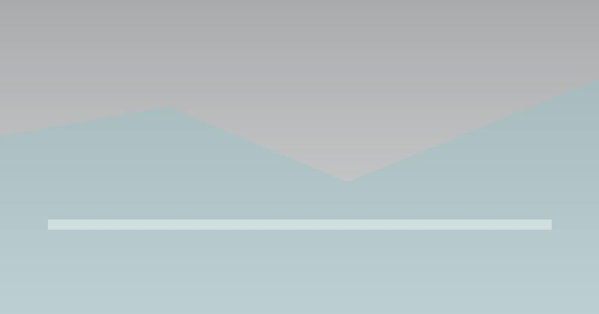
보수 받을 권리를 지키려면 책임기간에 맞춰 하자진단을 받아야 합니다
아파트 입주민이 시공사의 무상 보수를 받으려면 공사 종류별로 정해진 하자담보책임기간 안에 객관적인 증거를 갖춰 하자를 진단하고 청구해야 합니다. 그러려면 단지는 설계도서 분석과 표본 세대 선정 같은 점검 절차를 차근차근 밟아야 하고, 기간이 지나면 보수 청구권이 사라지니 미리 준비해야 합니다.
교량 안전점검 체크리스트, 정밀점검은 언제 받아야 할까
교량 안전점검 체크리스트는 시설물안전법이 정한 정밀안전점검 시기를 지키고 구조 결함을 일찍 찾는 데 꼭 필요합니다. 관리 주체는 교량 준공일과 안전등급에 맞춘 법정 주기를 지키고, 교량받침이 움직였거나 기초가 물에 깎이는 이상 신호가 보이면 먼저 나서서 정밀 조사를 해 안전을 챙겨야 합니다.
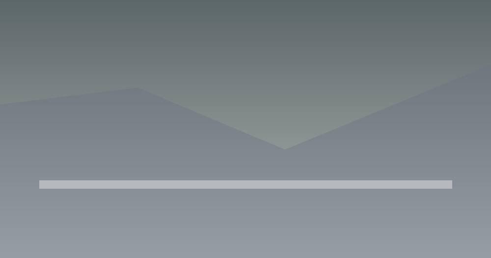
경북 영주 신축 아파트 사전점검 안내
경상북도 영주시에 들어서는 한 신축 단지의 사전점검 일정이 주말 이틀로 정해졌습니다. 수백 세대 규모로 연내 입주를 앞두고 막바지 공사가 한창이며, 고속철도 역과도 가까운 편입니다.
울산 원도심 신축 아파트, 단지 구성과 주변 환경
울산광역시 중구 원도심에 들어서는 한 신축 단지는 500세대가 넘는 규모로 지어집니다. 오래된 시가지 안에 자리 잡아 이미 갖춰진 도로와 생활 시설을 그대로 함께 씁니다.
대형 마트 내진성능평가 보고서, 이렇게 읽으세요
대형 마트 내진성능평가 보고서는 지진 때 건물이 무너지지 않고 손님이 안전하도록, 부재마다 수요 대비 역량 비율과 구조 안전성을 따져 본 기술 문서입니다. 여기서 안전율에 못 미친 부재는 긴급 보강 같은 보수 순서와 예산을 정하는 근거가 되고, 실측 데이터를 바탕으로 체계적인 안전 관리와 수선 계획을 세웁니다.
청주 산업단지 생활권 한가운데 신축 대단지 정보
청주 산업단지 생활권에 들어서는 한 신축 대단지는 2027년 초 입주를 앞두고 있습니다. 초고층 여러 동에 천 세대가 넘는 규모로, 비교적 넓은 평형 위주로 공급됩니다. 출퇴근과 통학, 생활 편의시설을 이용하기 좋은 여건이 주변에 함께 갖춰져 있다는 점도 눈여겨볼 만합니다.
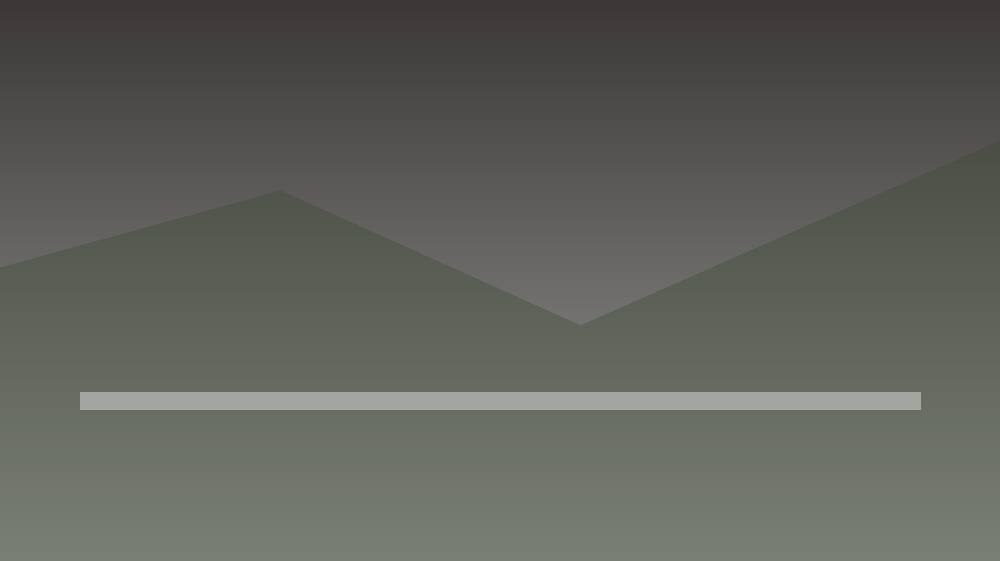
구조계산서는 언제 내야 할까, 호텔에 이상 신호가 보이면 무엇부터 할까
건물 구조계산서를 내야 하는 기준과, 호텔 같은 시설에서 균열이나 처짐 같은 이상 신호가 보일 때 현장에서 할 응급 조치를 설명합니다. 관리자는 정해진 한계를 넘는 구조 변형을 발견하면 곧바로 현장을 막고, 전문가의 정밀 구조 해석과 검토로 안전을 확인해 사고를 막아야 합니다.
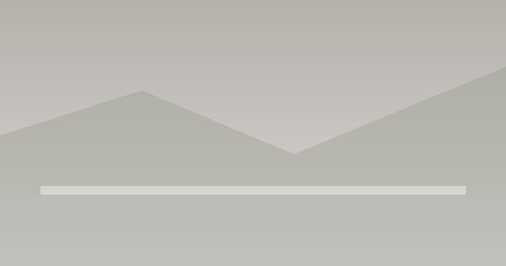
세입자에게 임대관리 서비스가 필요한 이유, 전월세 하자는 이렇게 기록하세요
전월세 집에서 나갈 때 생기는 원상복구 다툼은 이사 들어가기 전 집 상태를 기록해 두면 크게 줄일 수 있습니다. 입주 점검 대행을 맡기면 전문가가 장비로 하자와 이상 여부를 확인해 기록으로 남겨 줍니다. 원래 있던 건물 결함과 사는 동안 생긴 문제를 분명히 나눠 보증금 다툼에 대비할 수 있습니다.
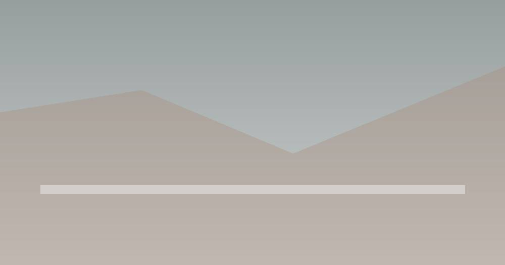
현장 조사·안전진단, 실무에서 챙기는 체크리스트
안전진단 현장에서는 먼저 시설물의 지금 상태를 눈으로 봅니다. 균열이나 변형처럼 바로 보이는 결함을 살피고, 필요한 곳은 측정 장비로 값을 잽니다. 여기에 도면과 지난 기록까지 함께 따져야 실제 상태에 맞는 안전등급을 매길 수 있습니다.
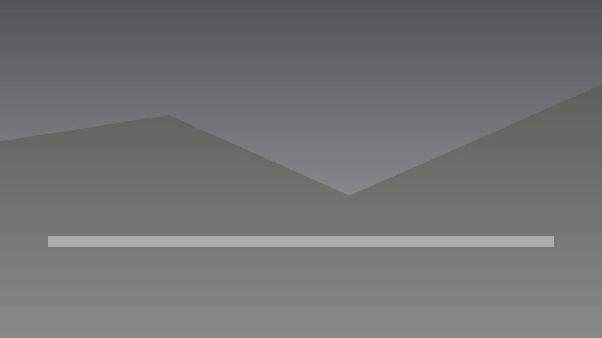
경기 이천 신축 단지 사전점검, 이것만은 꼭 보세요
올가을 입주를 앞둔 경기 이천의 한 신축 단지는 500세대가 넘는 규모라, 입주 전에 마감과 구조 하자를 차근차근 확인해야 합니다. 아트월, 창호, 바닥, 설비 같은 주요 항목을 도구로 직접 점검하고, 마감 공사 하자를 꼼꼼히 기록해 두면 살면서 불편할 일이 줄어듭니다.
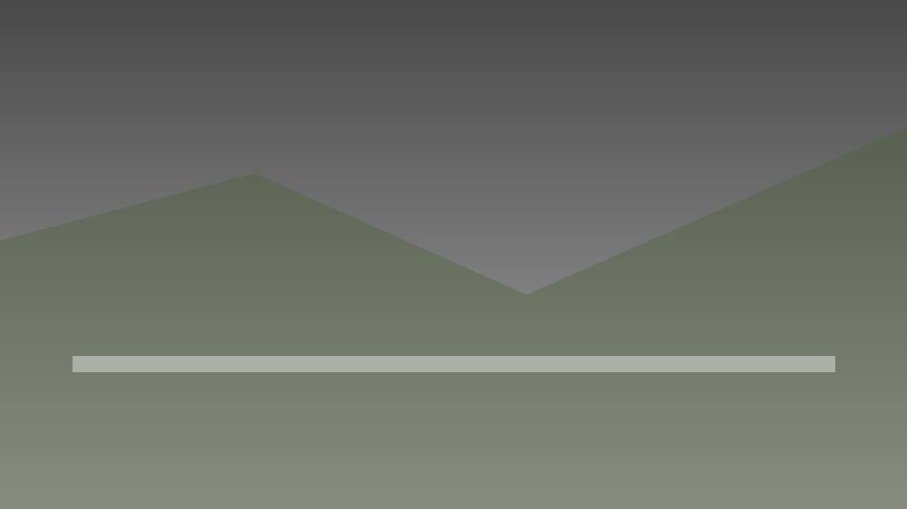
경기 평택 신축 단지 사전점검, 시간대별로 이렇게 움직이세요
입주를 앞둔 평택의 한 신축 단지는 700세대가 넘는 규모라 사전점검을 미리 계획해 두는 게 좋습니다. 마감 상태, 기본 설비 작동, 가구와 배관을 빠짐없이 보려면 동선을 미리 짜서 정해진 시간 안에 효율적으로 돌아야 합니다.
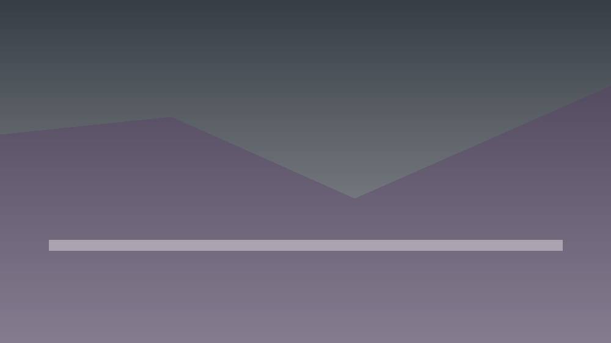
전북 전주 신축 대단지 사전점검, 혼자 볼까 맡길까
전주 재개발 구역에 들어서는 한 신축 대단지는 2천 세대 가까운 규모로, 입주 전 사흘 넘게 사전점검을 엽니다. 정해진 시간 안에 하자를 효율적으로 찾으려면 세대별 옵션 내역부터 맞춰 보고 기본 설비가 잘 돌아가는지 먼저 확인하세요. 필요하면 정밀 장비를 갖춘 전문가와 함께 가는 것도 방법입니다.
전북 익산 소규모 신축 단지 사전점검 체크리스트와 동행 요령
하반기 입주 예정인 익산의 150세대 남짓한 신축 단지도 정해진 기간 안에 세대 안 마감과 설비 결함을 확인해야 합니다. 한 방향으로 돌며 벽지와 가구 마감을 보고, 배수구 상태와 열화상 카메라로 배관까지 살피세요. 필요하면 전문가에게 정밀 진단을 맡길 수 있습니다.
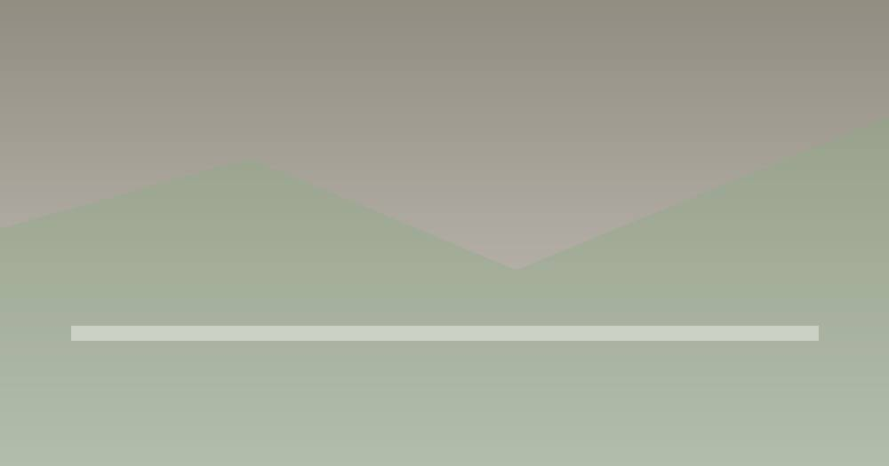
서울 강남 재건축 신축 단지, 처음 사전점검 가는 분께
올가을 입주하는 서울 강남구의 한 재건축 단지도 입주 전 마감재와 설비 결함을 확인하는 사전방문을 엽니다. 새 아파트는 벽지나 타일 하자가 흔하니, 장비로 꼼꼼히 점검해 입주 뒤 불편을 줄이세요.
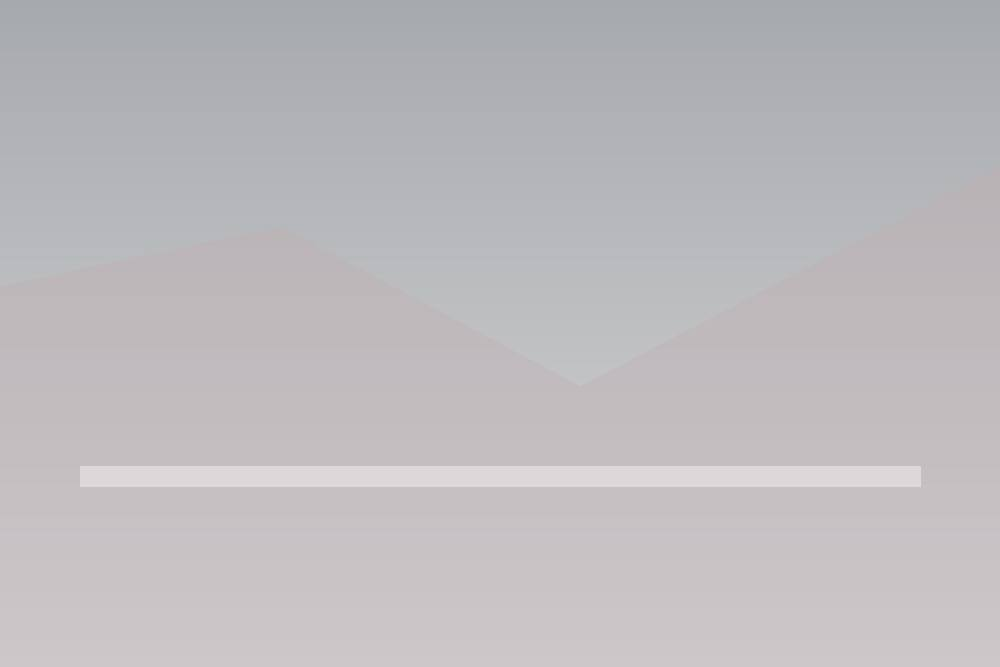
사전점검 대행, 표준 기준 한눈에 보기
국토교통부는 사전점검 과정에서 생기는 다툼을 줄이고 분양받은 사람의 권리를 지키려고 점검 대행 표준 기준과 표준계약서를 마련했습니다. 업체를 고를 때 봐야 할 핵심 항목과, 계약대로 하지 않았을 때 수수료를 깎거나 환불하는 절차를 정해 부실 점검 피해를 막도록 했습니다.
온하임 집수리·유지보수 서비스 시작
주택 점검 회사 온하임이 정밀 점검 데이터를 바탕으로 진단부터 시공, 사후 관리까지 한 번에 맡는 집수리·유지보수 서비스를 시작합니다. 쌓아 온 데이터와 직영 전담팀으로 공사비와 품질을 표준화하고, 공사 뒤 최대 12개월 무상 A/S를 지원해 가격이 불투명하던 수리 시장의 불편을 덜어 드립니다.
서울 강서 신축 단지 사전점검, 빠진 시공부터 잘못된 시공까지 꼭 보세요!
서울 강서구에 들어서는 한 신축 단지는 500세대가 넘고, 전용 59㎡·84㎡ 두 평형으로 지어집니다. 가을 입주를 앞두고 주말 이틀 동안 사전점검이 열립니다. 평형별 구조와 함께 사전점검에서 실제로 확인할 곳을 짚어 보겠습니다.
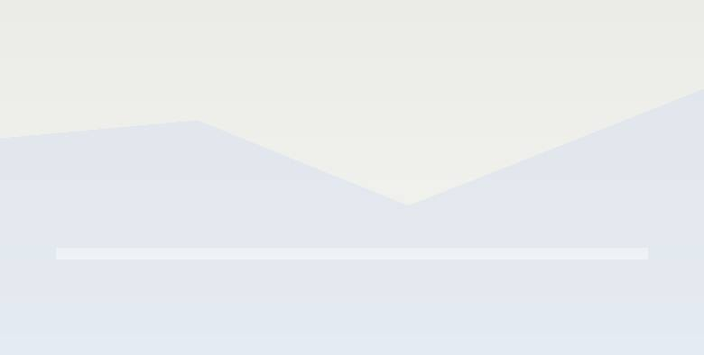
경기 오산 역세권 신축 단지, 입주 전 사전점검 체크포인트
오산 역세권의 한 신축 단지는 가을 입주를 앞둔 700세대 남짓한 단지로, 계단식 구조에 전용 84㎡ 한 평형만 있습니다. 세대를 볼 수 있는 기간은 사흘입니다. 같은 평면이 되풀이되는 단지라 수납 가구와 마감을 어디부터 볼지 순서를 정리했습니다.
인천 서구 신축 대단지, 사전점검 일정부터 평형·통학로까지
인천 서구에 들어서는 한 신축 대단지는 1천 세대가 넘고, 84㎡와 99㎡ 두 평형으로 지어지며 겨울에 입주합니다. 사전점검은 사흘 동안 열립니다. 타입별 구성과 생활권, 그리고 겨울에 입주하는 세대가 미리 볼 곳을 정리했습니다.
인천 검단 신축 단지, 주차 동선부터 사전점검 요령까지
인천 검단에 들어서는 한 신축 단지가 가을 입주를 앞두고 사흘간 사전점검을 엽니다. 세대 구성과 함께 주방 가구와 후드, 주차장에서 현관까지 오가는 길에서 미리 봐 두면 좋은 것들을 정리했습니다.
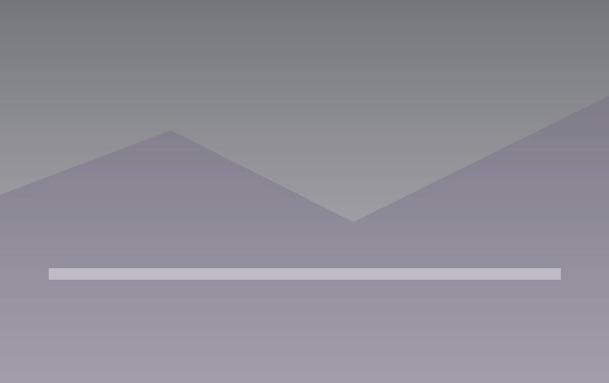
구조안전진단서를 내라고 해서 숙박업 용도변경이 늦어진 까닭
기존 건물로 숙박업을 하려면, 공사를 하든 안 하든 구조 검토가 필요한지부터 확인해야 합니다. 구조안전확인서를 요구받으면 기존 도면과 건축물대장 같은 자료가 필요할 수 있으니, 인허가를 시작하기 전에 필요한 서류를 미리 챙겨 두세요.
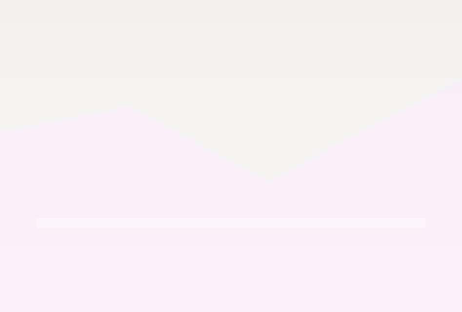
서울 은평 신축 대단지, 사전점검 전에 평면도부터 봐야 하는 이유
서울 은평구에 들어서는 한 신축 대단지는 2천 세대가 넘는 규모로, 소형부터 중형까지 세 가지 평형으로 지어지고 가까이에 어린이집도 여럿 있습니다. 가을 입주를 앞두고 사흘간 사전점검이 열립니다. 평형마다 달라지는 마감을 보는 기준과 중문 업체에 넘길 현관 치수를 짚었습니다.
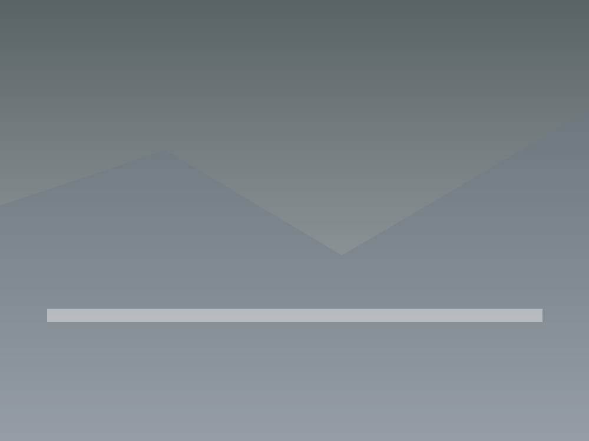
교량·터널 안전진단, 무엇부터 확인해야 할까
교량과 터널은 길이에 따라 종별이 나뉘고, 종별에 따라 받아야 할 점검이 달라집니다. 제1종시설물은 정밀안전점검만 받아서는 의무를 다한 게 아닙니다. 진단을 받고도 FMS에 등록하지 않으면 의무를 지키지 않은 것으로 보고 과태료가 나오니, 등록까지 꼭 확인하세요.
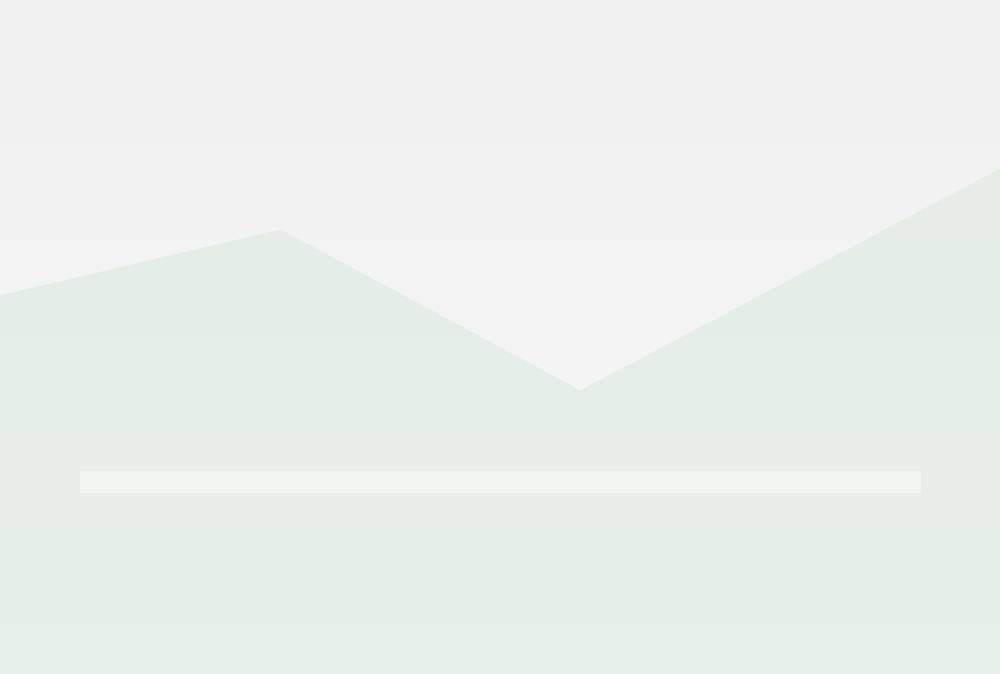
충남 청양 신축 단지, 입주 전 창호부터 확장부까지
충남 청양의 한 신축 단지는 두 동, 200세대가 안 되는 아담한 아파트입니다. 84㎡와 99㎡ 두 평형 가운데 84㎡가 대부분을 차지합니다. 입주 전에는 하자만 찾기보다 실제 생활에 필요한 창호와 치수, 단열, 난방 상태까지 함께 확인해 두세요.
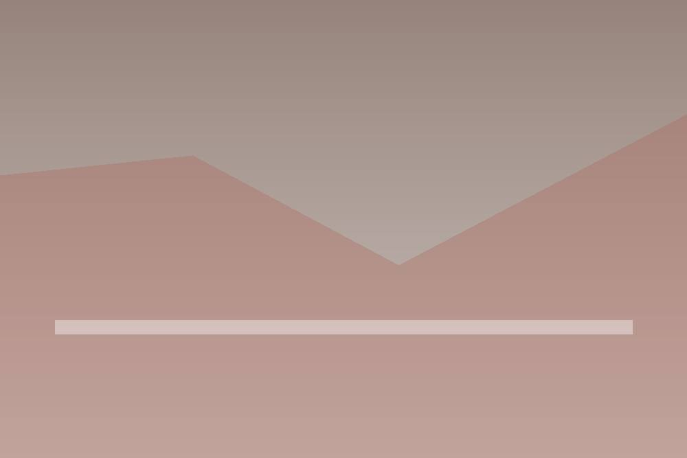
세입자라면 꼭! 전월세 보증금 돌려받기 전에 집 점검이 필요한 이유
세입자는 들어가기 전에 집을 꼼꼼히 확인해 두는 게 중요합니다. 벽지와 바닥 손상은 물론 욕실·주방 배수, 창호와 주요 설비 상태까지 봐 둬야 나중에 드러나는 하자로 다툴 일이 줄어듭니다.
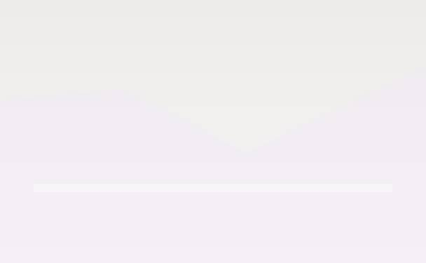
경기 이천 신축 대단지, 입주 전 하자점검 이렇게 하세요
이천의 한 신축 대단지는 1천 세대 규모로, 초가을 사흘 동안 사전점검이 열립니다. 59㎡·84㎡ 평형 구성과 입지를 살펴보고, 사전점검 때 세대 안과 공용 공간 하자를 꼼꼼히 확인하는 방법까지 정리했습니다.
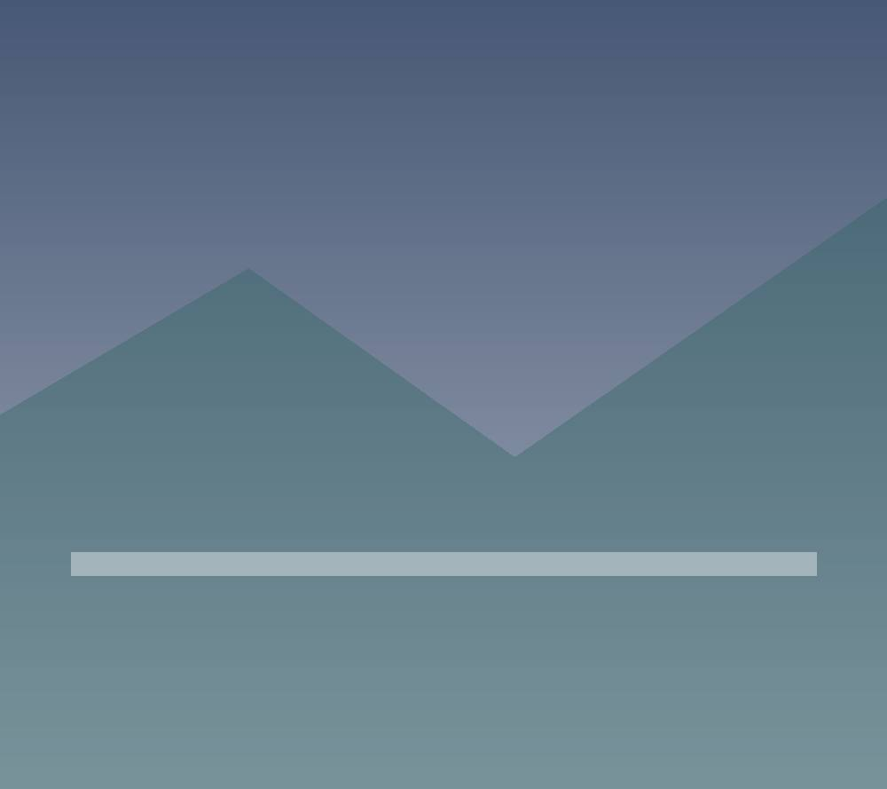
하자보수보증금, 하자마다 언제까지 청구할 수 있을까
보증금을 청구할 수 있는 시한은 하나가 아닙니다. 하자 종류별로 책임기간이 2년·5년·10년으로 갈려서, 한 단지 안에서도 어떤 항목은 이미 끝났고 어떤 항목은 몇 년이 남았을 수 있습니다. 우리 단지 하자가 각각 어느 기간에 속하는지부터 가려야 무엇을 먼저 청구할지 정할 수 있습니다.
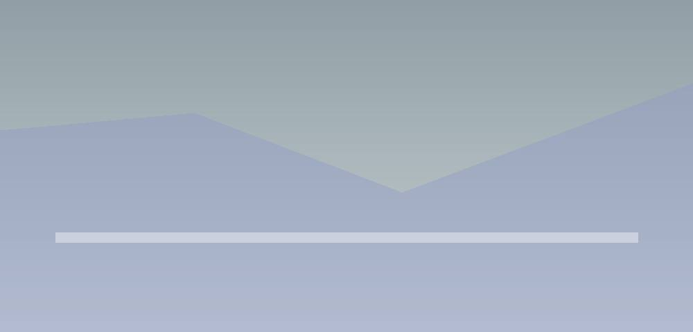
울산 신축 대단지, 후회 없는 입주를 위한 사전점검 업체 활용법
울산의 한 신축 대단지 사전점검이 초가을에 열립니다. 1천 세대가 넘는 단지가 같은 달에 입주를 앞두고 있어 세대마다 쓸 수 있는 시간이 길지 않습니다. 창문과 방문은 직접 여닫아 봐야 문제가 드러나고, 그날 재 둔 치수가 입주 청소와 가구 배치의 기준이 됩니다.
아파트 누수와 균열이 보내는 신호, 정밀안전점검을 미루면 안 됩니다
물 새는 일이 자꾸 생긴다면 방수층만 탓할 일이 아닐 수 있습니다. 바깥벽에 금이 가고 지하주차장 천장이 처져 보이기까지 한다면 뼈대 상태를 들여다봐야 할 때입니다. 언제 정밀점검을 받아야 하는지, 누가 대상인지, 어떻게 진행되고 결과 보고서는 어디에 쓰는지 차례로 짚어 봅니다.
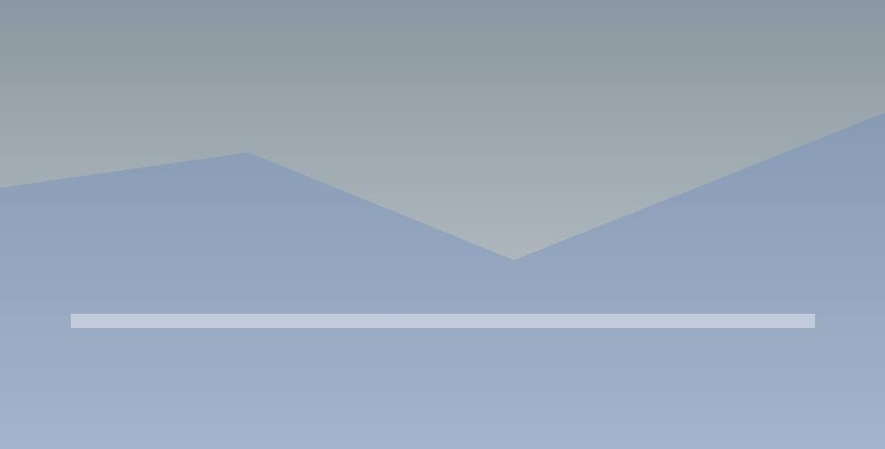
광주 첨단지구 신축 대단지, 가을 입주 앞두고 사전점검
광주 첨단지구의 한 신축 대단지가 초가을 사흘 동안 사전점검을 엽니다. 1천 세대가 넘는 규모로 외벽 도색과 조경이 마무리 단계입니다. 물을 직접 부어 보는 배수 확인과, 계약 때 받은 마감재 목록과 맞춰 보는 일이 이번 점검의 핵심입니다.
전세 나갈 때 도배 들뜸·장판 밑 곰팡이, 원상복구는 누구 몫일까?
전세 퇴거를 앞두고 집주인이 도배 들뜸과 장판 밑 곰팡이를 세입자 관리 소홀이라고 하는 일이 자주 있습니다. 같은 곰팡이라도 확장 발코니 바닥을 따라 띠처럼 번졌다면 단열 문제이고, 가구 뒤에 점점이 생겼다면 사용 문제입니다. 생긴 자리, 퍼진 모양, 측정값 세 가지를 보면 누가 책임질지 가려집니다.
다리와 터널, 몇 년마다 어떤 진단을 받아야 할까
다리라면 500m, 터널이라면 1km를 넘는 순간 1종 시설물이 되고 정밀안전진단 의무가 생깁니다. 세 가지 점검(정기점검·정밀점검·정밀진단)은 들여다보는 깊이가 다르고, 지난번 받은 등급이 낮을수록 다음 점검이 빨리 돌아옵니다. 우리 시설물이 몇 종이고 예전에 몇 등급을 받았는지는 FMS에서 찾아보면 됩니다.
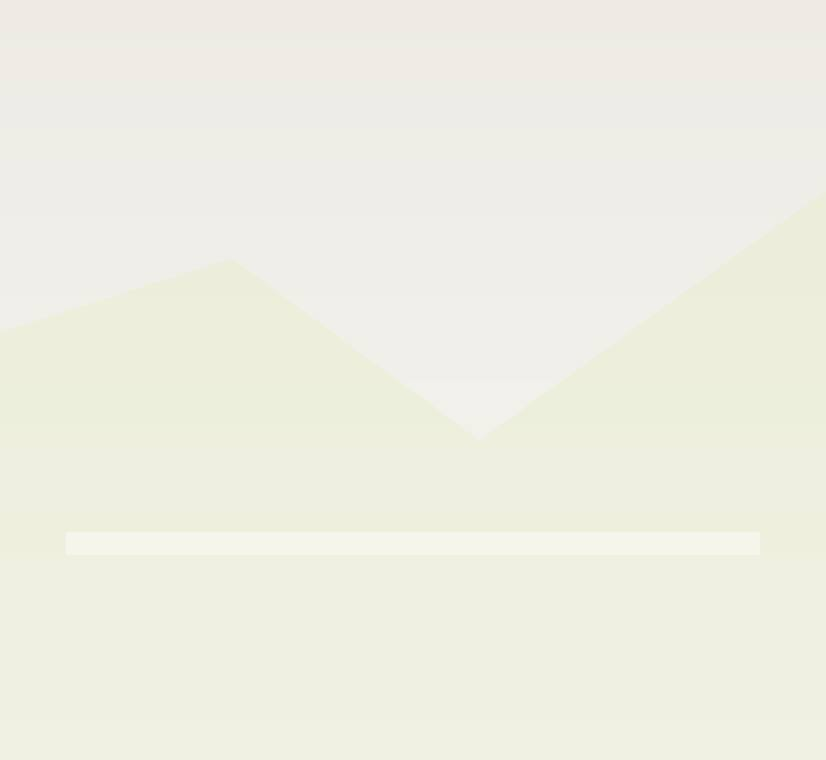
경기 안양 평촌 신축 단지, 입주 전에 하자 보수 다 됐는지 확인하는 법
안양 평촌의 한 신축 단지가 늦여름 주말 이틀 동안 사전점검을 엽니다. 지하철역까지 걸어서 10분대인 여섯 동, 400세대 남짓한 단지입니다. 개별난방이라 전열교환기, 시스템에어컨, 보일러 분배기는 전원을 켜 봐야 상태가 드러납니다. 가을 입주까지 두 달 동안 하자 보수 확인과 잔금 준비가 이어집니다.
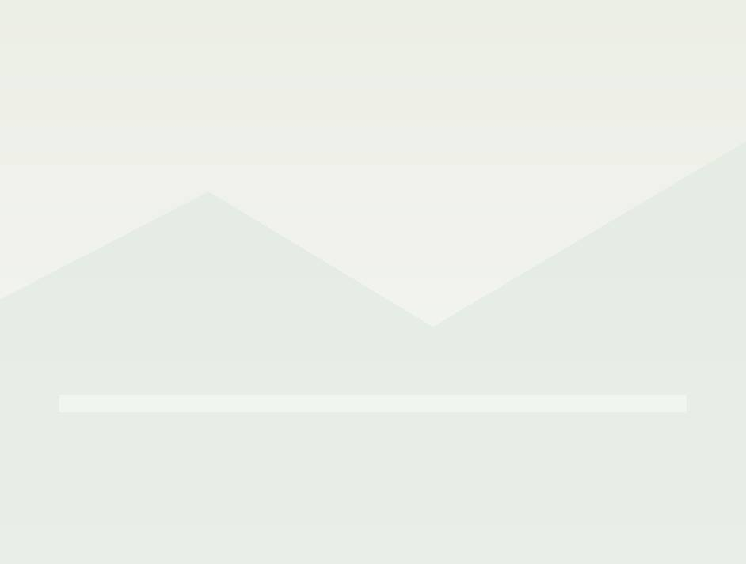
경기 의정부 신축 단지, 입주까지 한 달
의정부의 한 신축 단지가 늦여름 주말 이틀 동안 사전점검을 엽니다. 초고층 여섯 동, 800세대 남짓 규모로 바로 옆에 초등학교가 있습니다. 도배 이음매와 마루 들뜸처럼 손으로 짚어 봐야 하는 항목과 지하주차장 공용 공간에서 볼 것을 함께 정리했습니다.
아파트 사기 전에 집 상태는 이 순서로, 매매 점검이 필요한 이유
집을 산 뒤 드러난 결함을 누가 책임지느냐는, 계약하던 날 사는 쪽이 그 결함을 알았느냐로 갈립니다. 잔금까지 다 치른 다음 벽이 기운 걸 알았거나 창이 안 맞는 걸 알아도, 그 전 상태를 증명할 자료가 없으면 사는 쪽이 떠안게 됩니다. 서류부터 현장 방문, 전문가 점검, 특약, 잔금까지 단계마다 볼 것을 차례로 정리했습니다.
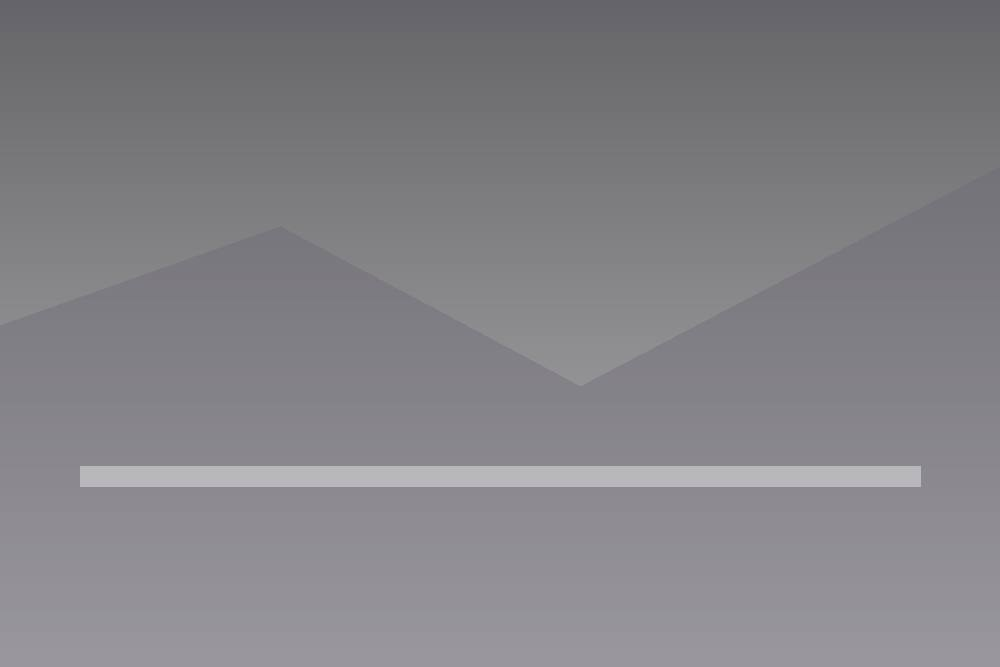
확인서와 검토서는 다른 서류, 허가 받을 때 내는 건 하나뿐입니다
확인서는 건축사나 구조기술사가 끝에 이름을 걸고 내는 법이 정한 서류이고, 검토서는 그 결론을 뒷받침하는 계산 보고서입니다. 허가 창구에는 확인서를 내야 하므로 검토서만 들고 가면 서류 미비로 돌려받습니다. 6층 넘는 건물이나 필로티 건물처럼 구조기술사 도장이 따로 있어야 하는 경우도 정해져 있습니다.
대전 원도심 신축 단지 사전점검, 겨울에 들어갈 집은 창호부터
대전 중구에 들어서는 한 신축 단지는 700세대 남짓 규모로, 늦여름 사흘간 사전방문을 열고 겨울에 입주합니다. 점검일과 입주일 사이 넉 달은 하자를 고칠 수 있는 기간입니다. 겨울에 처음 난방을 켜는 단지라 창호가 꼭 닫히는지와 단열 마감을 눈여겨봐야 합니다.
우리 교회도 점검 대상? 3종 시설물로 지정되면 법으로 정한 의무입니다
교회를 운영하다가 건물이 점검 대상이라는 걸 한참 뒤에 아는 일이 있습니다. 시설물 종별을 정하는 법과 공사 현장 정기점검을 정하는 법이 서로 다르기 때문에, 우리 건물이 어느 쪽에 해당하는지부터 알아야 언제, 누구에게 점검을 맡길지 정할 수 있습니다.
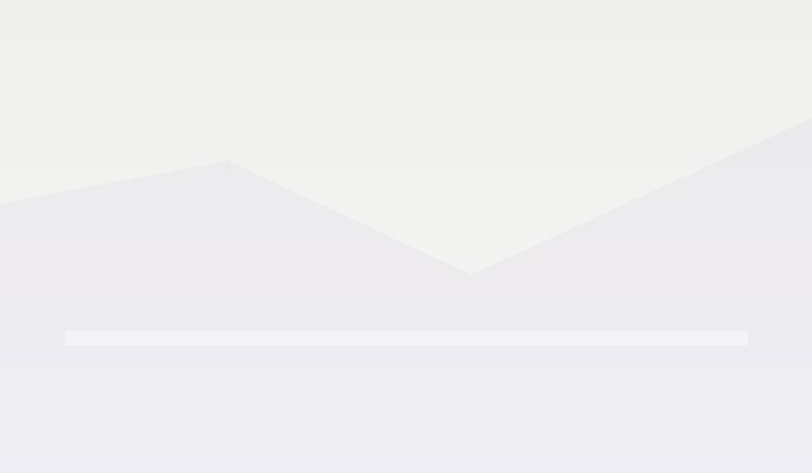
광주 첨단지구 신축 단지, 입주 예정자를 위한 사전점검 요령
광주 첨단지구의 한 신축 단지가 여름에 사전점검을 엽니다. 59㎡·84㎡ 두 평형이 스무 개 넘는 동에 나뉘어 있어 타입마다 확인할 곳이 다릅니다. 현장에서 접수한 하자는 세대별 입주 전까지 고치는 것을 목표로 공사가 진행되니, 나중에 맞춰 볼 수 있게 접수 기록을 사진으로 남겨 두세요.
집주인이 외국에 있을 때, 전세 끝나는 집 상태는 어떻게 확인하나요?
전세나 월세는 나갈 때 다툼이 생기곤 합니다. 대부분 들어오기 전 상태가 어디에도 기록돼 있지 않아서입니다. 온하임 내집관리 서비스는 세입자가 들어오기 전 누수, 외벽 균열, 마감 상태를 사진과 측정값으로 남겨 원상복구 범위를 미리 정해 둡니다.
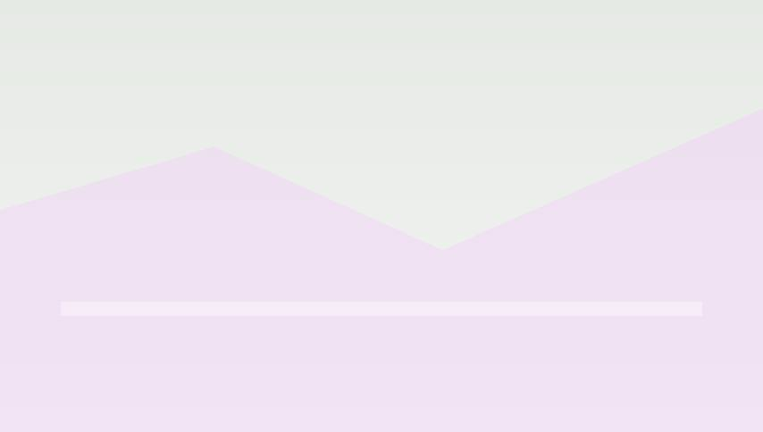
광주 첨단지구 중대형 신축 단지, 입주 전 체크리스트
광주 북구의 한 중대형 신축 단지가 여름 주말 이틀 동안 사전점검을 엽니다. 열두 동, 500세대 남짓 규모에 40평대부터 70평대까지 있습니다. 평형이 커서 전문 업체도 한 세대를 도는 데 두세 시간이 넘게 걸립니다. 이때 접수한 내용이 가을 입주 전 보수의 근거가 됩니다.
부산 강서 신도시 학교 옆 신축 단지 사전점검 일정
부산 강서구 신도시의 한 신축 단지가 여름에 사전점검을 시작합니다. 1천 세대가 넘고 84㎡·101㎡ 중대형 평형으로 이뤄진 단지입니다. 알파룸이 있는 세대는 벽 마감과 조명 위치를 꼼꼼히 보고, 공원을 마주한 세대는 창호가 꼭 닫히는지와 방충망 마감을 특히 살펴야 합니다.
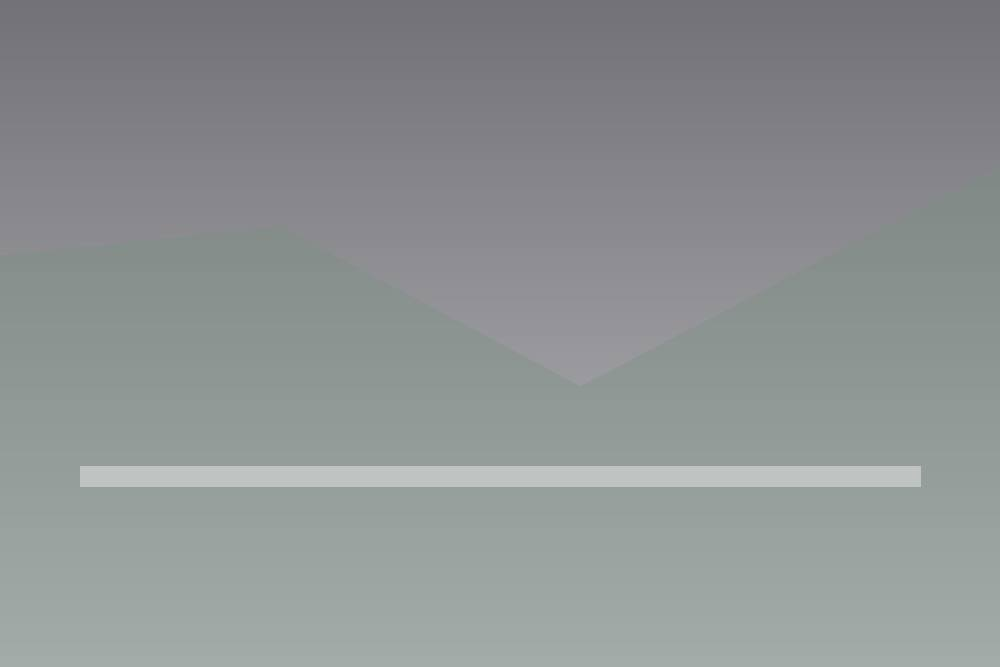
근린생활시설 비구조요소 내진설계, 준공 전에 꼭 볼 것
근린생활시설은 용도가 자주 바뀌는 건물입니다. 그때마다 설비 무게가 늘어나 준공 단계에서 비구조요소 내진설계가 빠진 것이 드러나기 쉽습니다. 설계도서에 내진 상세가 없거나 현장에서 빠뜨렸다면 사용승인이 늦어질 수 있으니 조심하세요.
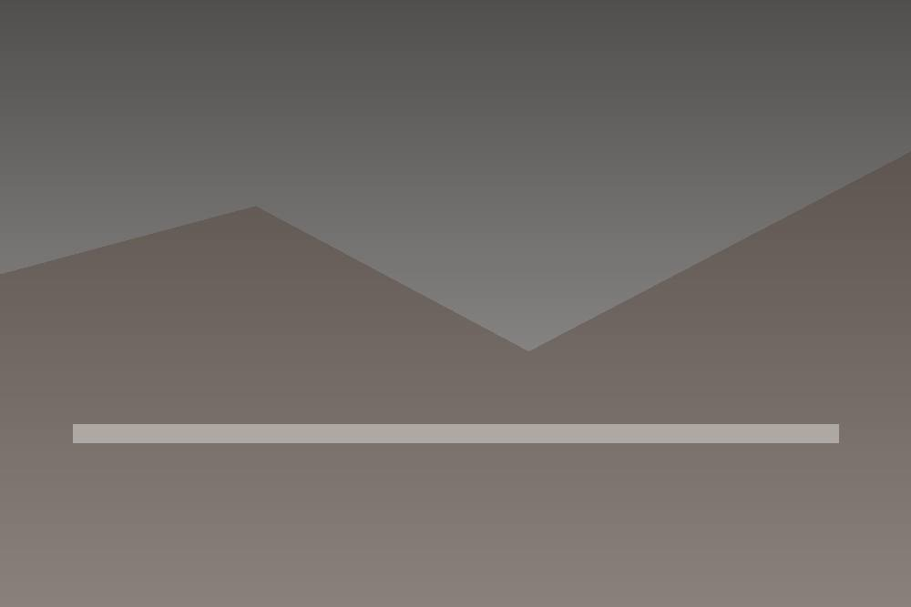
아파트 정밀안전진단, 재건축·리모델링과 무슨 관계일까
아파트라도 층수와 면적이 법이 정한 선을 넘으면 정밀안전진단을 받아야 합니다. 세대에 물이 새거나 바깥벽에 금이 간 것은 겉으로 보이는 손상일 뿐이고, 진단에서는 건물이 무게를 얼마나 버티는지까지 따집니다. 진단에서 나온 보수 계획을 장기수선 공사 일정과 맞춰 두면 돈을 아낄 수 있습니다.
인천 검단 역 앞 신축 단지, 사전점검 일정과 입지 정리
인천 검단 신도시의 한 신축 단지 사전점검이 여름에 열립니다. 지하철역이 단지 바로 앞이고 연장 노선 역도 가까이 예정돼 있습니다. 400세대 남짓에 소형부터 30평대까지 평형이 나뉘며 초가을에 입주합니다.
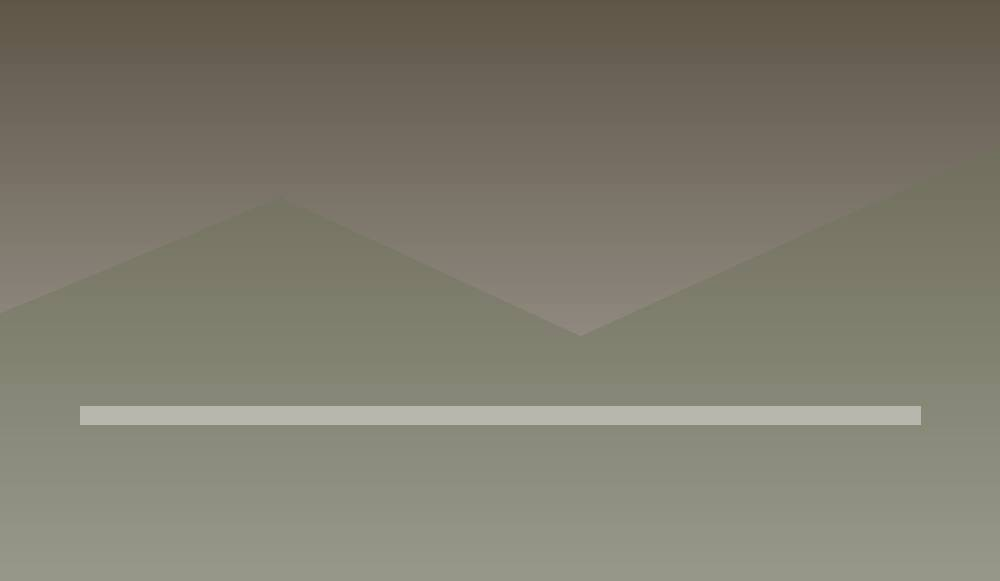
깎은 비탈면(절토사면) 안전진단, 대상과 주기
절토사면 안전진단은 산이나 언덕을 깎아 만든 비탈이 무너질 위험을 미리 따져 보는 법정 절차입니다. 시설물안전법이 정한 규모를 넘는 절토사면은 시설물로 지정돼 정기점검과 정밀진단을 받아야 하고, 지키지 않으면 과태료가 나옵니다. 규모에 따라 준공 직후부터 점검 대상이 될 수 있으니, 관리 주체가 먼저 대상인지 확인해야 합니다.
경기 의왕 역세권 신축 단지, 사전점검 일정과 입주 준비
의왕의 한 신축 단지는 새 전철역을 코앞에 둔 700세대 남짓한 역세권 단지입니다. 사전점검은 한여름 이틀간 열리고 입주는 늦가을로 예정돼 있습니다. 역과 공원이 가깝다는 점이 입지의 강점입니다.
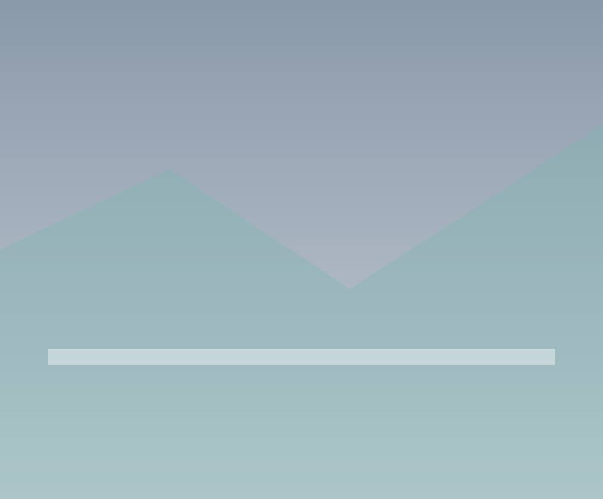
사전점검 업체는 이렇게 고르고, 하자는 이렇게 접수하세요
사전점검 업체를 쓸 때는 예약부터 최종 보고서 확인까지 챙길 순서가 있습니다. 처음 사전점검을 앞둔 분이 놓치기 쉬운 항목, 준비물과 점검 방식, 하자 접수 방법을 안내해 드립니다.
새 아파트에 물이 새고 이슬이 맺힐 때 — 하자진단과 책임기간
입주한 지 얼마 안 된 집에 물이 새고 벽에 이슬이 맺혀도 시공사는 하자가 아니라고 버티곤 합니다. 하자진단은 그 결함이 잘못 지은 탓인지 시간이 지나 생긴 것인지를 가려, 고칠 책임이 누구에게 있는지 증명하는 일입니다. 책임기간이 끝나기 전에 진단을 받아 두어야 청구할 권리가 남습니다.
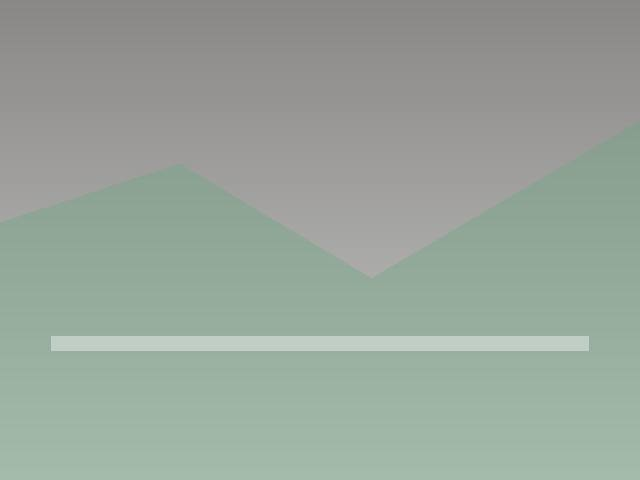
증축이나 용도변경 전에 구조 해석부터 해야 하는 이유
구조 해석은 건물을 숫자 모델로 옮겨 여러 무게를 실제처럼 걸어 보고 부재마다 응력과 변위를 계산하는 일입니다. 층을 올리거나 용도를 바꿔 하중 조건이 달라질 때, 구조가 버틸 수 있는지 공사 전에 확인합니다. 모델링, 하중 조합, 해석, 판정, 보고서 순서로 진행하고 결과는 구조기술사가 판정합니다.
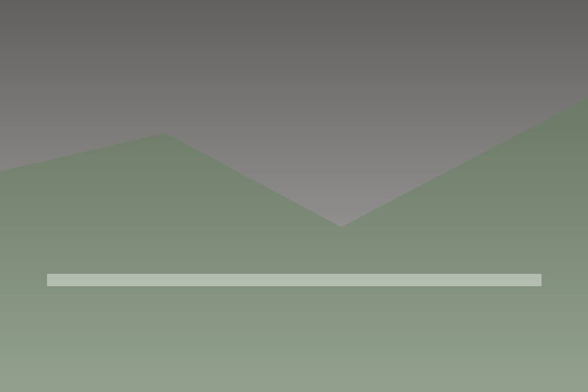
집 사기 전에 챙길 서류부터 집 상태 점검 요령까지
주택 매매 계약 전에 집 상태를 확인하려면 준비, 점검 당일, 보고서 활용까지 단계별로 챙길 것이 있습니다. 시점과 서류를 놓치면 하자를 찾고도 비용을 떠안기 쉬우니 순서대로 챙기세요.
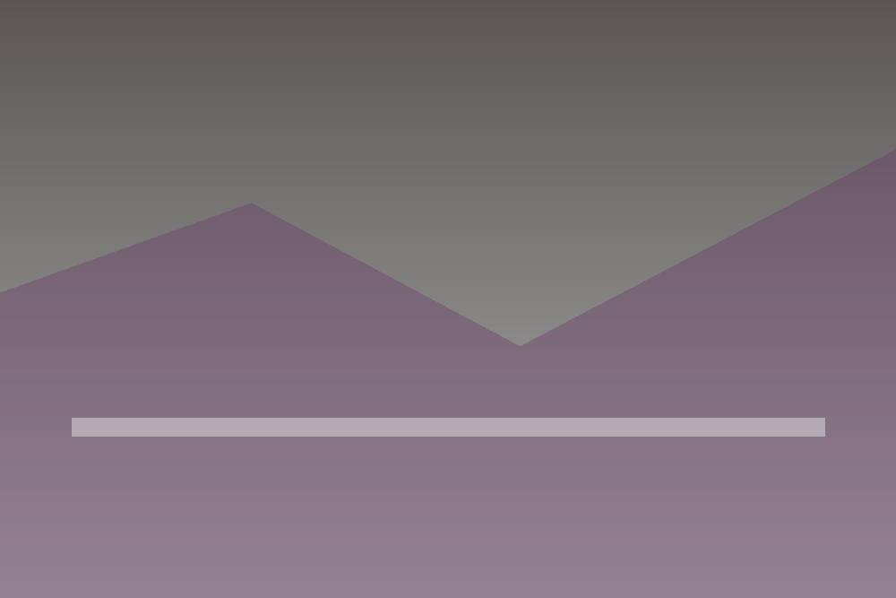
건물 일부를 헐기 전에 구조부터 따져야 하는 이유와 순서
구조검토는 설계도서, 구조계산서, 현장 시공 상태를 건축구조기준에 비춰 보고 구조 안전성이 요구 수준을 채우는지 확인하는 기술 절차입니다. 벽이나 기둥을 헐면 무게가 지나던 길이 끊기니, 남는 구조가 늘어난 무게를 버티는지부터 따져야 합니다. 검토 없이 철거하면 처짐이나 균열이 생긴 뒤에는 되돌리기 어렵습니다.
충남 서산 신축 단지, 사전점검 일정과 당일 점검 순서
충남 서산에 400세대 남짓한 신축 단지가 들어서 가을 입주를 앞두고 있습니다. 병원과 공원이 가까워 생활하기 편한 곳입니다. 사전점검은 늦여름 주말 이틀 동안 열립니다. 욕실 배수와 창호 여닫힘을 중심으로 순서를 미리 정해 두면 당일 시간을 아낄 수 있습니다.
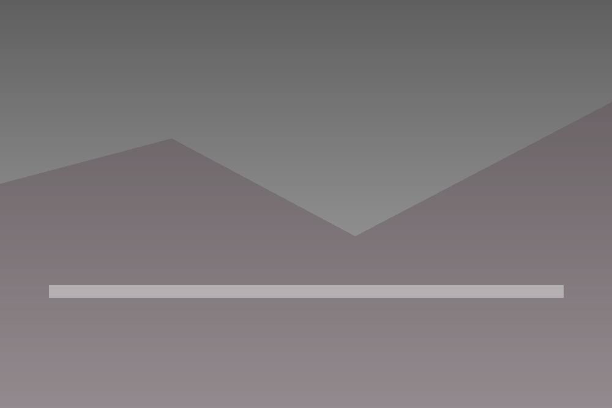
법원 감정까지 내다본 하자진단, 소송까지 단계별로 챙길 것
아파트 하자소송은 소장을 내기 전에 증거를 얼마나 모아 두었느냐로 결과가 갈립니다. 하자진단, 감정에 대비한 보고서 준비, 법원 감정 대응, 판결 뒤 이행 확인까지 단계마다 챙길 것을 차례로 정리했습니다. 변호사를 정하기 전에 읽어 두면 준비 순서를 잡는 데 도움이 됩니다.
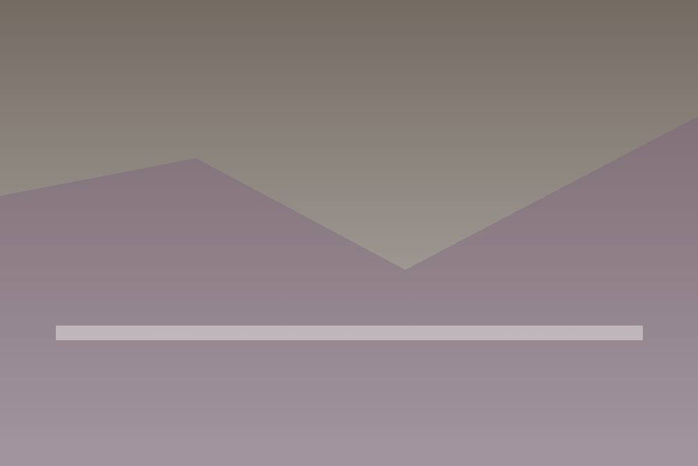
내진성능평가, 왜 받아야 할까? 대상부터 등급, 절차까지 한 번에
필로티 건물은 1층을 기둥 몇 개가 받치는 구조라 지진이 오면 힘이 1층에 몰려 무너지기 쉽습니다. 내진 기준이 생기기 전, 1988년 이전에 지은 건물이라면 더 위험할 수 있습니다. 내진성능평가는 이미 지은 건물이 지진을 얼마나 버티는지 확인하는 법정 절차로, 새로 지을 때 하는 내진설계와는 다릅니다. 평가를 받아야 하는 대상과 절차, 걸리는 기간과 비용을 정하는 기준까지 정리했습니다.
FMS 등록부터 다리·터널 진단 주기까지
다리와 터널은 시설물안전법에 따라 규모별로 안전진단 의무가 나뉩니다. FMS 등록 기준, 1·2·3종 구분, 점검 주기와 절차, 비용 계산 방식을 많이 묻는 질문 순서대로 정리했습니다. 우리 시설이 의무 대상인지 판단하는 데 필요한 기준을 담았습니다.
서울 동작 역세권 소규모 신축 단지, 사전점검 일정과 주변 소식
서울 동작구의 한 신축 단지는 지하철 두 노선을 함께 쓰는 100세대 남짓한 역세권 단지입니다. 주변으로 새 철도 계획도 이어지고 있습니다. 사전점검 날에는 마감재 금, 결로 자국, 배수와 바닥 기울기에 문제가 없는지 집중해서 보세요.
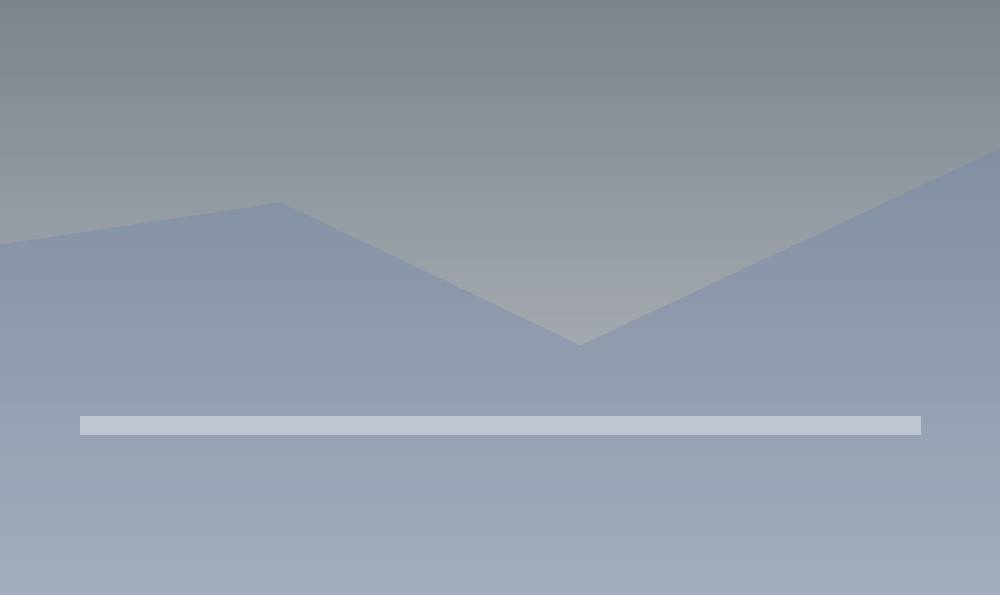
부산 동래 신축 단지, 사전점검 일정과 챙길 것
사전점검은 한여름 주말 이틀 동안 예약제로 열립니다. 단지 주변으로 도시고속도로와 생활 복합 시설, 체육 시설 같은 계획이 이어지고 있습니다. 당일엔 수평계, 충전기, 줄자를 챙겨 누수, 결로, 타일 들뜸, 싱크대 하부장, 문틀 여닫힘을 집중해서 보세요. 하자는 빠뜨리지 않고 빨리 고쳐지도록 현장에서 바로 앱으로 접수하는 편이 좋습니다.
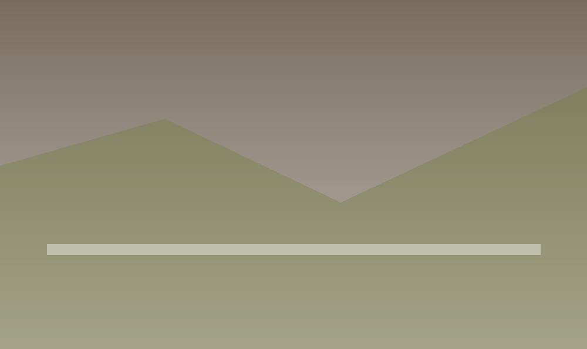
전남 광양 신축 단지 사전점검 날짜가 잡혔다면, 무엇부터 볼까
초여름 금·토 이틀 동안 열립니다. 베란다와 다용도실 결로 자국, 창틀 실리콘 마감, 욕실과 발코니 배수 기울기를 중심으로 보세요. 수평계(또는 휴대폰 앱), 포스트잇, 잔금을 비춰 볼 손전등, 물 부어 볼 바가지를 챙기면 좋습니다.
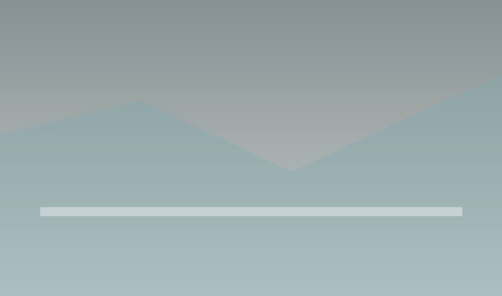
경남 창원 신축 단지, 사전점검 일정과 알아 두면 좋은 요령
한여름 주말을 낀 사흘 동안 열립니다. 주변에 간선급행버스 노선이 생기고 초·중학교가 바로 옆이라 아이 키우기 좋은 입지입니다. 욕실 바닥 물 고임, 창호 헐거움과 잠금장치, 싱크대 아래 누수를 꼭 보세요. 챙길 것: 수평계, 줄자, 포스트잇, 바가지, 휴대폰 충전기
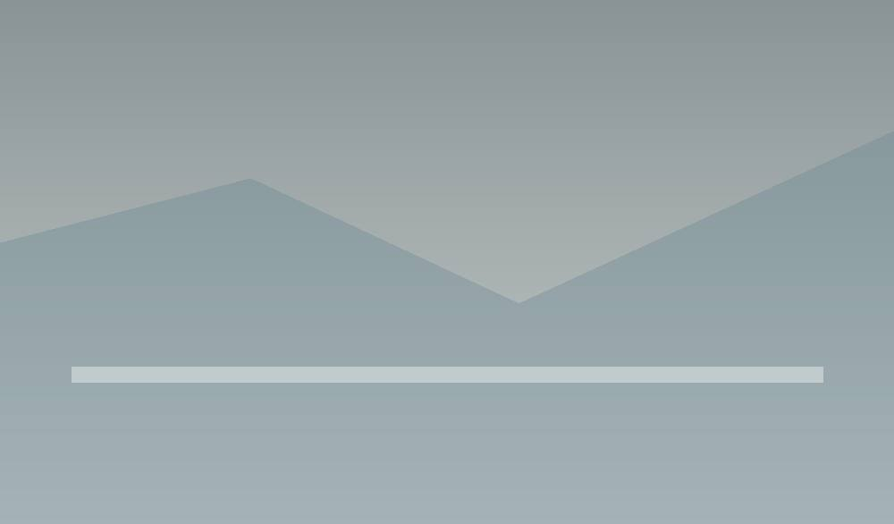
경북 포항 바닷가 신축 단지 사전점검 일정
포항 바닷가의 한 신축 단지가 한여름 주말 이틀 동안 사전점검을 엽니다. 예약은 시공사 앱에서 선착순으로 받습니다. 점검 때는 0.3mm 넘는 벽 균열과 배수 상태를 먼저 보시고, 주변으로 다리와 관광 시설 같은 개발이 이어지고 있다는 점도 참고하세요
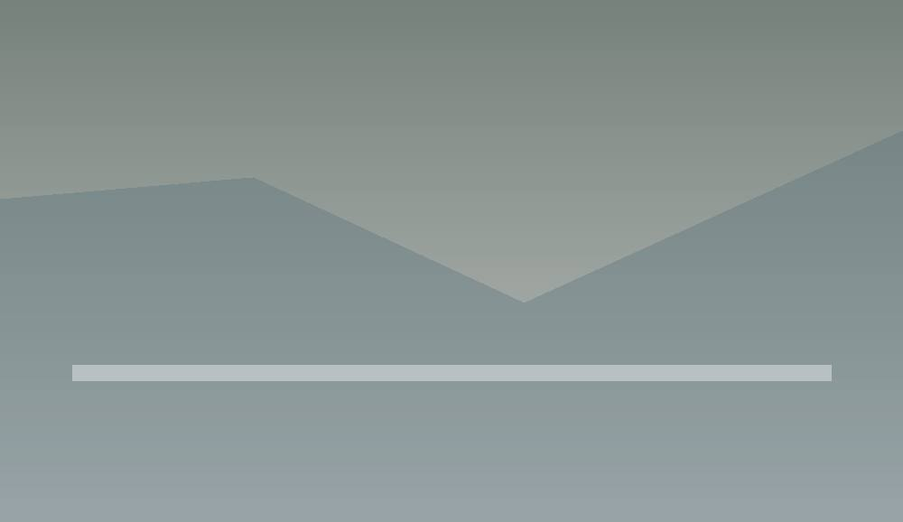
서울 서초 재건축 신축 단지 사전점검 일정
한여름 사흘 동안 사전점검이 열리고, 정식 입주는 초가을부터 두 달 남짓 이어집니다. 물 부어 볼 바가지나 분무기, 수평계, 콘센트 확인용 휴대폰 충전기, 마스킹 테이프를 챙기세요. 여러 지하철역을 함께 쓰는 입지에, 주변 업무 지구 개발도 이어지고 있습니다.
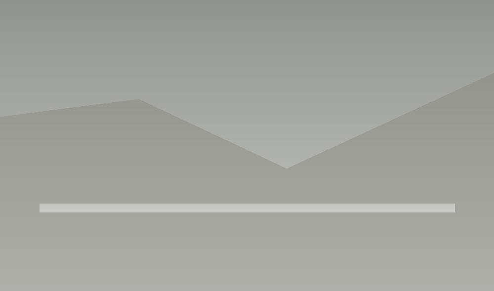
경기 양주 역세권 신축 단지, 여름 사전점검 예정
늦여름 입주 예정이고 사전점검은 7~8월 중 열립니다. 600세대 남짓한 단지로, 전철역 바로 앞이며 광역급행철도 노선 개통도 기다리고 있습니다. 하자 보수 기간은 공사 종류에 따라 2년에서 5년까지이고, 점검 때는 0.3mm 넘는 벽 균열과 결로 자국을 가장 먼저 확인하세요.
오래된 건물을 고치기 전, 구조안전진단부터 받아야 하는 이유
낡은 건물을 리모델링하거나 증축할 때 구조안전진단은 법이 정한 의무이자 안전을 위해 먼저 거쳐야 할 절차입니다. 건물이 지금 얼마나 버틸 수 있는지 정확히 알아야 붕괴 사고를 막고 제대로 된 보강 설계를 할 수 있습니다.

강원 춘천 신축 단지 사전점검 일정
가을 입주 예정이고, 공식 사전점검은 여름 주말 이틀입니다. 주변에 대규모 주거 단지가 함께 들어서고 고속철도 계획도 기다리고 있습니다. 하자 접수 사진은 멀리서 한 장, 가까이서 한 장을 꼭 함께 찍어야 처리가 빠지지 않습니다.

옥상 방수, 꼭 초록색 우레탄이어야 하나요
옥상 방수에 초록색 우레탄을 많이 쓴 건 보기 편하다는 이유로 굳어진 시공 습관 때문이고, 우레탄 자체는 투명하거나 흰색에 가깝습니다. 우레탄 방수는 값이 싸고 시공이 쉬워 널리 쓰이지만 수명이 3~5년으로 짧은 편입니다. 요즘은 보기 좋고 햇빛 열을 덜 받는 회색 우레탄이나, 더 오래가는 시트 방수·복합 방수가 대안으로 쓰입니다.
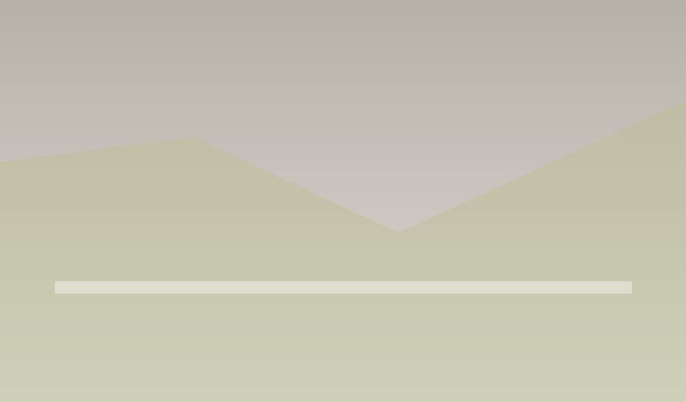
경기 수원 역세권 신축 단지 사전점검 일정
사전점검은 한여름 금요일부터 일요일까지 사흘간 열리고, 입주는 늦여름 예정입니다. 전철역 바로 앞이고 광역급행철도가 지날 역과도 가까운, 큰 주거 타운 한가운데 자리입니다. 베란다 창틀 둘레 누수·결로 자국과 폭 0.3mm 넘는 균열부터 확인해야 무상 보수를 받을 수 있습니다.
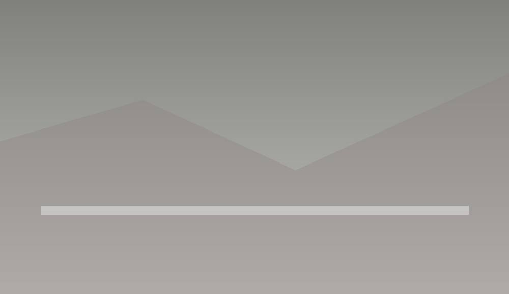
경기 수원 북부 신축 단지 사전점검 일정
수원 북부 택지지구의 한 신축 단지가 초여름 금요일부터 일요일까지 사흘간 정식 사전점검을 엽니다. 교육 특화 구역으로 꾸며지는 지구로, 새 전철역과 대형 쇼핑몰도 가깝습니다. 베란다 단열 마감이 부실해 생긴 결로 자국과 벽 구조체의 0.3mm 넘는 잔금을 중점적으로 접수하세요.
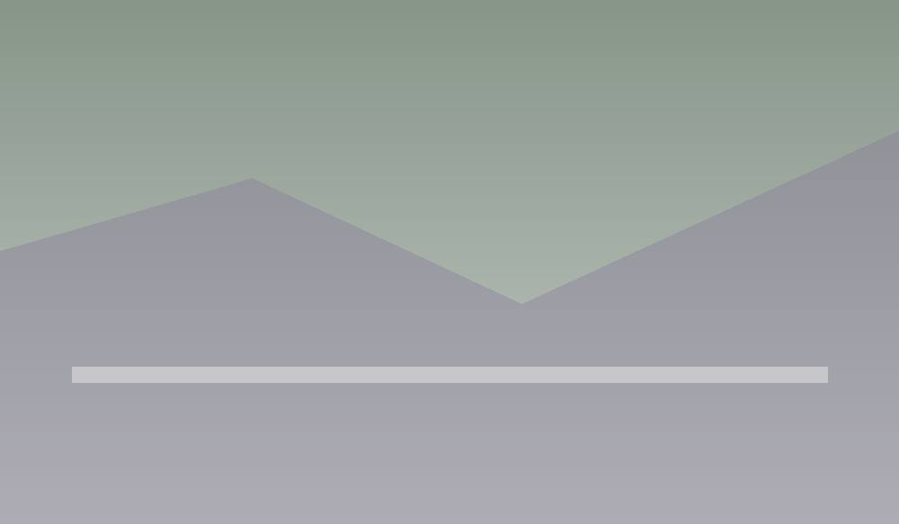
경기 안산 고잔 신축 단지 사전점검 일정
안산 고잔지구의 한 신축 단지가 초여름 주말 이틀 동안 사전점검을 엽니다. 새 전철역 개통과 초등학교가 가깝다는 점이 장점입니다. 당일에는 폭 0.3mm 넘는 균열과 결로를 수평계와 배수 시험으로 꼼꼼히 봐 두어야 입주 전 제대로 보수를 받을 수 있습니다.
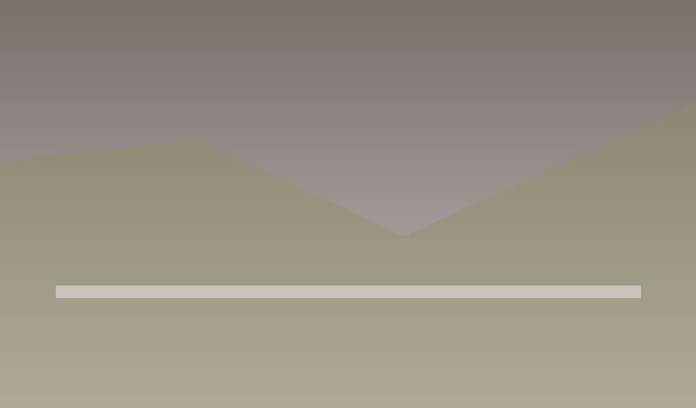
무량판 구조 아파트, 정말 무너질 위험이 있을까요
무량판 구조 자체는 백화점이나 다리에도 쓰이는 안전하고 흔한 공법입니다. 뉴스에 나온 붕괴 사고는 구조 방식 탓이 아니라 철근을 빼먹은 부실시공이 주된 원인이었습니다. 국내 아파트 주거동은 대부분 벽식 구조이고, 무량판은 주로 지하주차장에만 쓰였습니다.
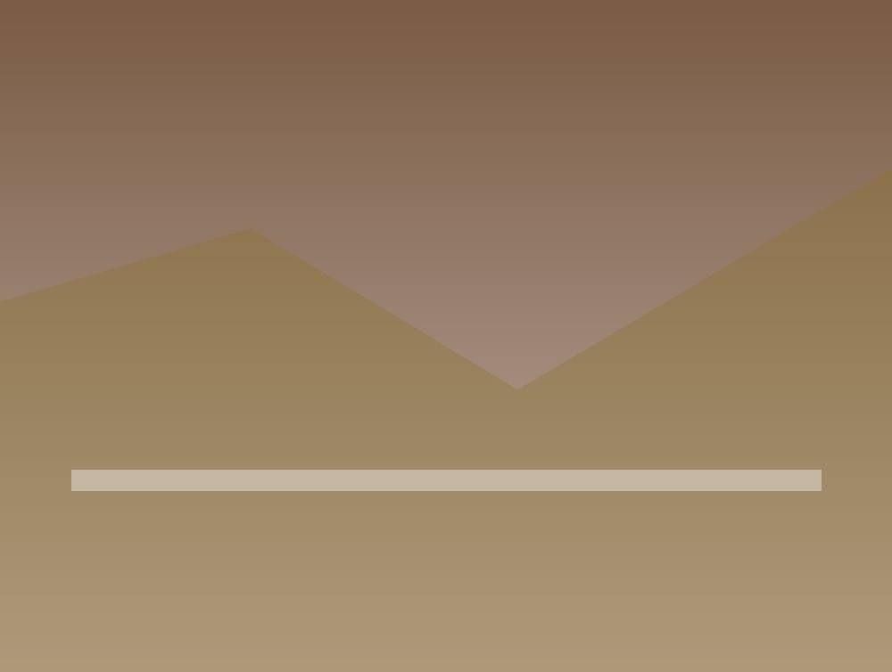
내진보강 공사하면 받을 수 있는 세금 혜택과 감면 조건
감면 대상은 지을 때 내진설계 의무가 없었던 민간 건물입니다. 대수선으로 내진 성능을 갖추면 취득세와 일정 기간 재산세를 감면받을 수 있고, 신축·증축은 감면 폭이 다릅니다. 건축구조기술사가 확인한 내진성능 확인서와 구조계산서가 필요합니다. 이 밖에 소득세·법인세 세액공제, 용적률·건폐율 완화, 지진보험료 할인 같은 혜택도 있습니다.

안전점검 실패 사례: 부실 보고서 때문에 다시 점검받게 되는 위험
점검비를 아끼려고 값싼 부실 업체를 고르면 국토안전관리원 평가에서 보고서가 반려될 수 있습니다. 반려되면 이미 낸 점검비를 고스란히 날리고, 최고 2,000만 원 과태료와 다시 받는 점검비까지 이중으로 물게 됩니다. 업체를 고를 때는 값보다 정식 등록 여부와 최근 3년 실적을 서류로 꼭 확인하세요.
부산 서면 신축 단지 사전점검 일정
부산 서면의 한 신축 단지 입주자 사전점검 날짜가 초여름 사흘로 정해졌습니다. 주변 철도 시설 이전과 역 복합환승센터 개발이 이어지는 곳이라, 준공 전에 세대 결함을 꼼꼼히 짚어 두는 게 중요합니다. 앱으로 하자를 올릴 때는 보수팀이 위치를 정확히 찾도록 먼 사진과 가까운 사진을 함께 내야 하고, 접수된 결함은 주택법에 따라 입주지정기간 시작 전까지 고치는 것이 원칙입니다.
터널 안전진단으로 중대재해처벌법에 대비하고 미리 관리하기
중대재해처벌법상 터널 같은 공중이용시설에서 사망 사고가 나면 경영책임자는 1년 이상의 징역형을 받을 수 있습니다. 국토안전관리원 기준에 맞춘 터널 안전진단 기록은 경영책임자가 안전 의무를 성실히 지켰다는 것을 증명하는 가장 확실한 근거가 됩니다. 정기 정밀안전진단과 상시 감시 체계를 묶어 위험을 미리 다스리는 관리 체계를 갖춰야 합니다.
경기 안산 고잔 신축 단지 사전점검 일정
초여름 주말 이틀 동안 사전점검을 하고 가을에 입주를 시작합니다. 네 동, 400세대 남짓한 고잔지구 신축 아파트로, 새 전철역이 개통하면 여의도까지 30분대에 닿습니다. 눈으로 확인하기 어려운 누수, 단열 불량, 수평 오차를 집중해서 보세요.
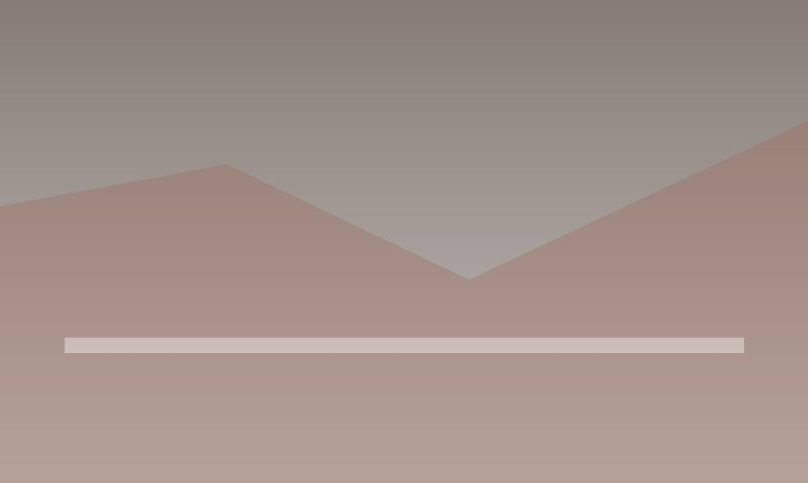
정기안전점검, 면제나 미루기가 될까요?
철거 예정 시설이 해체 허가와 이주 완료처럼 분명한 철거 단계에 들어갔다면 지자체 승인을 받아 면제받을 수 있습니다. 오래 비어 있는 시설은 출입을 막고 사용을 멈춘 뒤 지자체 승인을 받으면 한동안 미룰 수 있습니다. 다만 승인 공문이 나오기 전에 점검을 건너뛰면 과태료를 물 수 있으니 반드시 미리 신청하세요.
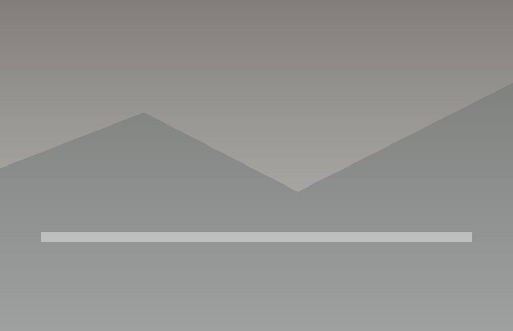
하자소송 전에 진단 업체가 먼저일까, 변호사가 먼저일까?
아파트나 상가 하자 분쟁에서는 변호사보다 하자진단 업체를 먼저 찾는 편이 실제로 해결하는 데 낫습니다. 무작정 소송하기보다 정확한 데이터로 빠르게 협상할 수 있고, 소송비와 성공보수를 아껴 실제 보수비를 온전히 남길 수 있기 때문입니다.
경기 파주 운정 신축 단지, 늦여름 사전점검 예정
가을 입주 예정이고 사전점검은 늦여름 무렵으로 보입니다. 전용 84㎡ 4베이 알파룸 한 평형, 네 동 300세대 남짓 규모입니다. 광역급행철도 역까지 걸어서 몇 분이고, 주변 지구 입주가 차례로 이어지는 시기와 맞물려 있습니다.
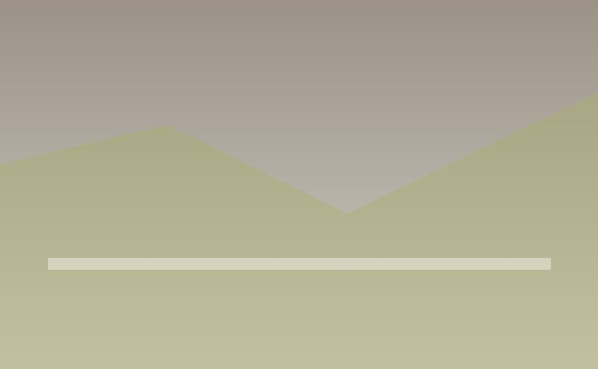
벽지가 울렁울렁, 이것도 하자일까?
벽지가 울렁이는 건 가장자리에만 풀을 바르고 가운데는 띄워 붙이는 '공간 도배' 방식 때문에 생기는 자연스러운 현상입니다. 도배 직후나 습한 날엔 잠깐 늘어날 수 있지만, 한 달이 지나도 펴지지 않거나 테두리가 들뜨거나 속에 이물질이 있다면 분명한 시공 불량입니다. 도배 뒤 적어도 3~4일은 창을 닫고 자연스럽게 말려야 터지지 않고, 도배 하자 보수 책임기간은 2년입니다. 벽지가 축축하거나 곰팡이가 핀다면 누수나 골조 균열 같은 구조 하자를 의심해 보세요.
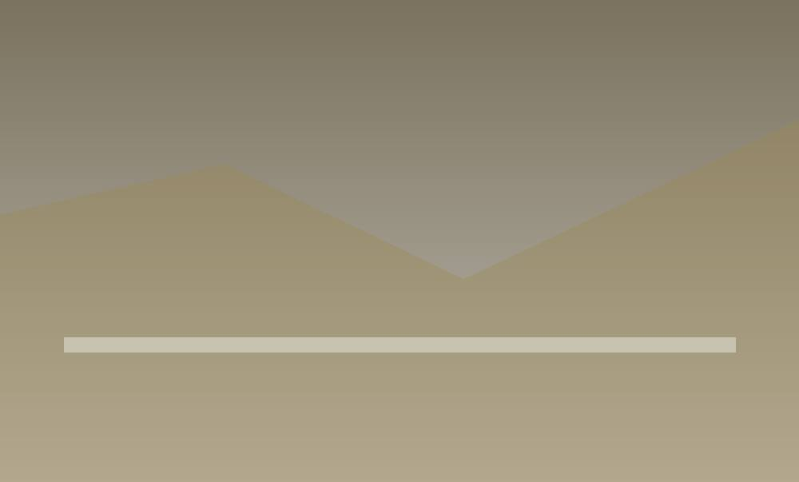
충북 청주 산업단지 신축 단지 사전점검 일정
-청주 산업단지 생활권의 한 신축 단지가 초여름 사흘 동안 사전점검을 엽니다. -당일 두세 시간 안에 현관부터 시계 방향으로 모든 방을 봐야 하니 동선과 체크리스트를 미리 준비해 두세요. -보수는 점검 뒤 1~3주 안에 끝나는 편이라, 입주 청소는 보수 일정이 정해진 다음에 잡아야 보수 자국이 남는 일을 피할 수 있습니다.
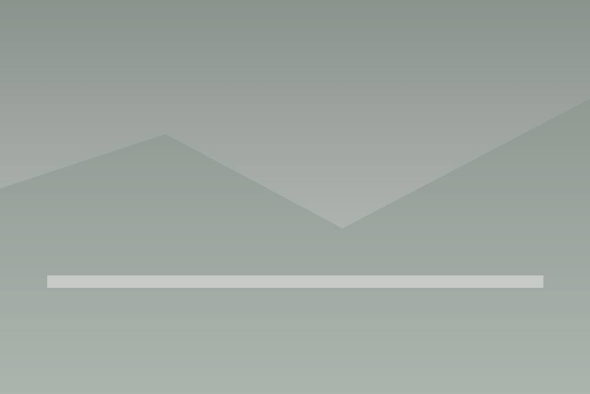
인천 검단 신축 단지 사전점검 일정
일정: 초여름 주말 이틀, 시공사 공식 일정 확정. 볼 것: 84㎡는 현관 수납 마감과 일부 타입 외벽 결로, 99·119㎡는 알파 공간 단열과 열린 발코니 방수 기울기를 집중 점검. 교통: 걸어서 갈 수 있는 거리에 전철역이 개통돼 있는 단지
지하주차장 천장 금과 하얀 얼룩, 하자진단으로 풀기
지하주차장 천장에 생긴 백화와 균열은 보기 싫은 문제가 아니라 구조물이 낡아 간다는 경고입니다. 균열 폭이 0.3mm를 넘으면 속 철근이 녹슬기 시작하니, 바로 하자진단을 받아 물길을 막는 주입식 방수와 백화 제거를 시작해야 합니다.
충남 아산 탕정 신축 대단지 사전점검 일정
아산 탕정의 한 신축 대단지(1천 세대 이상)가 초여름 토요일부터 월요일까지 사전점검을 엽니다. 늦여름 입주 전 하자를 점검할 기회이니 손전등, 줄자, 카메라를 챙겨 공간별 마감과 배수를 꼼꼼히 보세요. 계약자가 직접 가기 어렵다면 대리인이나 전문 대행 업체와 함께 갈 수 있고, 찾은 하자는 위치와 증상을 구체적으로 적어 내야 나중에 보수가 수월합니다.
경기 평택 신도시 신축 대단지 사전점검 일정
늦여름 입주 예정인 평택 신도시의 한 대단지(1천 세대 이상)가 초여름 사흘간 사전점검을 엽니다. 이름이 비슷한 이웃 단지가 있으니 시공사 공식 공지를 꼭 함께 확인하세요. 입주 초기엔 주변 학교, 병원 같은 생활 시설이 아직 부족하니 단지 안 커뮤니티 시설이 잘 갖춰졌는지 보는 게 특히 중요합니다. 고층 대단지인 만큼 급수·배수·환기 상태와 바깥 창호가 꼭 닫히는지도 꼼꼼히 보세요.
문과 문틀 사이가 벌어졌어요, 어디부터 하자일까
정상 범위: 새 아파트 방문과 문틀 사이 틈은 보통 2~3mm 안팎입니다. 하자로 보는 경우: 뒤틀려서 문이 안 닫히거나, 틈이 고르지 않아 바람·소리가 새거나, 수직·수평이 틀어졌다면 하자입니다. 직접 확인: 문을 45도, 90도로 열어 뒀을 때 가만히 있지 않고 저절로 움직인다면 설치가 잘못된 것입니다.
상가 옥상에 카페를 열려면 구조 검토는 어떻게?
상가 옥상을 카페나 정원으로 바꾸면 실리는 무게가 크게 늘어 구조안전성 검토를 꼭 받아야 합니다. 설계하중 기준상 사람이 늘 모이는 옥상 광장은 활하중을 최소 300kg/㎡ 이상(많게는 500kg/㎡) 잡아야 합니다. 구조 검토 없이 무단으로 증축하거나 용도를 바꾸면 건축법에 따라 이행강제금과 위반건축물 등재 같은 강한 행정처분을 받습니다.
시설물안전법을 어기면 과태료는 얼마? 관리자가 할 일 정리
시설물안전법상 1·2·3종 시설물의 관리 주체는 안전등급에 맞춰 정기안전점검, 정밀안전점검, 정밀안전진단을 주기마다 받아야 합니다. 결과는 시설물통합관리시스템(FMS)에 꼭 등록하고 유지관리계획서도 내야 합니다. 이를 하지 않거나 기한을 넘기면 수천만 원대 과태료가 나올 수 있고, 사람이 다치면 형사처벌과 민사 손해배상 책임까지 집니다.
서울의 새 다세대 건물, 하자를 조사해 보수를 끌어낸 일
새로 지은 다세대 주택 건물 전체의 하자 실태를 꼼꼼히 조사해 마친 용역입니다. 눈으로 보는 조사와 장비 조사(열화상 카메라, 수직·수평 측정)로 시공 결함을 가려내고, 시공사가 책임지고 고치게 할 믿을 만한 근거를 마련했습니다. 입주자 대표 모임은 이 자료로 시공사에 보수를 요청했습니다.
강원도 공공기관 본관, 점검 등급을 매긴 기록
온하임은 2025년 하반기 강원 지역 한 공공기관 본관 사옥의 정밀안전점검 용역을 마쳤습니다. 온하임 책임기술자가 전체를 총괄했습니다.
아파트 누수 하자, 생긴 자리마다 어떻게 인정됐을까
아파트 누수는 입주민이 자주 겪는 결함입니다. 천장 얼룩이나 벽 백화는 보기 싫은 정도로 넘기기 쉽지만, 법원 감정보고서를 보면 얘기가 다릅니다. 한 단지 안에서도 누수가 생긴 자리마다 다른 결함으로 나뉘고 보수비도 다르게 매겨집니다. 이 글에서는 한 아파트 감정보고서를 바탕으로 옥상·지상주차장부터 계단실·점검구·부속실·관리시설까지 자리별로 하자가 인정된 이유와 보수비를 매긴 방식을 정리했습니다. 누수 자국을 보고 어떻게 해야 할지 고민하는 분께 도움이 될 겁니다.
바깥벽 가림살(루버)이 바람을 견디는지 계산한 일
건물 외장재로 다는 파이프 루버(Louver)가 구조적으로 안전한지 검토한 용역입니다. 국토교통부 고시 건축구조기준(KDS)에 따라 바람과 지진 하중을 넣어 정밀하게 해석했고, 모든 부재의 응력이 허용 범위 안에 있음을 확인해 최종 납품했습니다.
나무로 짓는 쉼터 지붕, 안전 계산과 설계를 맡은 일
공원과 바깥 쉼터에 세울 목조 퍼걸러가 구조적으로 안전한지 건축법과 기술 기준에 따라 검토한 용역입니다. 기술사의 구조 계산과 3차원 해석으로 자체 무게, 눈 무게, 바람 하중 같은 실제 조건에서 버틸 수 있음을 보였고, 기초가 알맞은지까지 확인해 납품했습니다.
실내 경기장 점검 결과, B등급이 나오기까지
큰 체육관의 구조 안전성과 내구성을 확인하려고 진행한 용역입니다. 외관 조사와 비파괴 재료 시험으로 건물 상태를 종합 평가했고, 보조 부재의 가벼운 결함 말고는 구조적 문제가 없어 최종 'B등급'으로 판정했습니다.
벽 타일 뒤채움이 모자라 깨지고 떨어질 때 어떻게 할까
겨울이 되면 새 아파트 벽 타일에 금이 가거나 터져 입주민이 피해를 보는 일이 가끔 있습니다. 대개 낡아서가 아니라 시공할 때 타일 뒤를 충분히 채우지 않은 하자가 근본 원인입니다. 입주한 지 5년이 안 됐다면 아래 내용을 보고 집 벽 타일을 확인해 미리 대처하세요. 이 글에서는 타일 하자의 법적 판정 기준과 대응 방법을 정리했습니다.
부산의 140m 옹벽, 정밀점검을 마치기까지
온하임은 부산에 있는 길이 약 140m의 큰 옹벽을 정밀안전점검했습니다. 외관을 꼼꼼히 조사하고 비파괴 재료 시험으로 결함을 정확히 짚었으며, 구조 안전성 평가를 바탕으로 앞으로 정밀안전진단이 필요하다는 의견과 함께 안정적으로 관리할 방법을 내놓았습니다.
옆 공사장 때문에 우리 건물에 금이 갔다면
건축·토목 안전진단을 하는 온하임입니다. 근처에서 큰 신축 공사가 시작되면 이웃 건물 주인은 땅이 내려앉거나 벽이 갈라지는 피해를 보곤 합니다. 이럴 때 시공사에 정당하게 권리를 주장하려면 꼭 알아야 할 쟁점과 실제 대응 방법을, 실제 판례를 바탕으로 정리해 설명드리겠습니다.
지하철 공사로 건물에 금이 갔을 때 해결하는 법
건축·토목 안전진단 전문기관 온하임입니다. 큰 지하철 연장 공사나 고층 빌딩 현장 주변에서는 땅이 움직여 이웃 건물 벽이 갈라지거나 지하층에 물이 새는 일이 자주 생깁니다. 건물주는 큰 손해를 보지만 시공사는 대개 건물이 낡아서라며 책임을 피합니다. 이 글에서는 실제 판례를 바탕으로, 지하철 공사장 옆 건물에 피해가 생겼을 때 어떻게 대응하는지, 공사 전 현황조사와 인과관계 증명으로 보수비를 받아 내는 방법을 살펴봅니다.
세입자가 나갈 때 반려동물 흔적, 판례로 본 임대차 분쟁
주택 점검 회사 온하임입니다. 임대차 계약이 끝나면 세입자는 살던 집을 원래대로 돌려놓을 책임을 집니다. 요즘 반려동물을 키우는 집이 늘면서 배설물이나 발톱 자국으로 생긴 파손을 두고 집주인과 세입자가 다투는 일이 잦습니다. 이 글에서는 반려동물 훼손 사례를 중심으로 세입자가 어디까지 원상복구해야 하는지, 실제 판례로 대응 방법을 자세히 살펴봅니다.
반려동물이 망가뜨린 벽지, 원상복구는 어디까지?
반려동물과 사는 집이 늘면서 계약이 끝날 때 시설 파손을 두고 다툼이 자주 생깁니다. 세입자는 평소 쓰다 닳은 것이라 하고, 집주인은 반려동물이 남긴 특별한 손상이라며 수리비를 달라고 합니다. 이 글에서는 실제 판례를 바탕으로 반려동물 원상복구 분쟁에서 어떤 항목이 정당한 비용으로 인정되는지 자세히 살펴봅니다.
하자진단비, 장기수선충당금·관리비·잡수입 중 어디서 낼까?
장기수선충당금은 사업주체와 협의해 진행한 하자진단에만, 그것도 입주자 과반수 동의를 받아야 쓸 수 있습니다. 관리비나 잡수입으로는 하자진단비를 낼 수 없습니다.
물류센터 네 동 정밀안전점검을 마치고
온하임은 대형 복합물류센터 A~D동의 2025년 정밀안전점검을 마쳤습니다. 점검 결과 중대한 결함은 없고 전반적으로 양호한 상태였으며, 시설을 더 안전하게 쓸 수 있도록 유지관리 방법을 정리해 제시했습니다.
활하중과 고정하중, 쉽게 풀어 드려요
건축·토목 안전진단 전문기관 온하임입니다. 건물을 설계할 때 가장 중요한 건 건물이 무게, 곧 사람과 물건이 만드는 활하중을 얼마나 잘 버티느냐입니다. 무게를 제대로 계산하지 못한 건물에 너무 무거운 장비가 들어오거나 사람이 몰리면 안전이 크게 흔들릴 수 있습니다. 이 글에서는 건물을 안전하게 관리하려면 꼭 알아야 할 하중의 원리와 법적 기준을 현장 경험에 비춰 설명드리겠습니다.
옥외 전광판, 구조 검토부터 보강 설계까지
온하임은 공공기관 청사에 달린 옥외 LED 전광판의 구조 안전성 검토를 마쳤습니다. 현장 조사와 3D 구조 해석으로 힘이 모자란 부재를 정확히 찾았고, 강풍에 전광판이 떨어져 2차 피해가 생기지 않도록 확실한 보강 방안을 마련했습니다.
공공 업무시설 정기안전점검 용역을 맡다
안전진단전문기관 온하임은 최근 수도권 대형 공공 업무시설의 제2종 시설물 정기안전점검을 마쳤습니다. 현장 조사와 결함 분석으로 건물의 구조 안전성을 확인하고 앞으로의 유지관리 방향을 제시했습니다.
비탈에 선 옹벽, 구조검토 뒤 보강 설계까지
온하임은 비탈에 선 자립식 옹벽이 넘어지거나 밀려나지 않는지 구조안전성을 검토했습니다. 검토 결과 보강이 필요하다고 판단돼 현장 상황에 맞춘 보강 설계까지 함께 전달했습니다.
서버실에 장비를 더 들이기 전, 구조검토서 작성
수도권 대형 업무시설 서버실에 새 장비를 더 들이려고 진행한 구조안전성 검토입니다. 3차원 구조 해석으로 기존 구조가 안전한지 확인했고, 보강 없이 장비를 들여도 문제가 없다는 결론을 내 무사히 설치할 수 있게 했습니다.
바깥벽 석재를 받치는 철물, 구조검토 진행
온하임은 새로 짓는 복합체육센터의 외벽 석재 마감을 받치는 구조물에 대한 구조검토를 마쳤습니다. 수직하중, 바람 하중, 지진하중 같은 여러 조건을 꼼꼼히 적용해 받침 철물이 구조적으로 안전한지 최종 확인했습니다.
준공 4년 차 지식산업센터, 정밀점검 결과
안전진단 전문기관 온하임은 준공 4년 차인 국내 대형 지식산업센터의 2024년 정밀안전점검을 마쳤습니다. 눈으로 보는 조사와 비파괴 재료 시험으로 건물 종합 안전등급을 'B등급'으로 평가했고, 시설을 더 잘 쓸 수 있는 보수 방안을 정리해 구조 안전성을 확인했습니다.
경기 파주 집합건물, 하자 실태조사를 마치고
수도권의 한 대형 집합건물 공용·전유부분 하자 실태조사를 마쳤습니다. 균열, 누수, 미시공 같은 결함을 정밀하게 점검해, 나중에 구분소유자들이 떠안을 보수비를 줄이기 위한 조사였습니다.
아파트 공용부분 하자, 어떻게 관리해야 할까?
새 아파트에 입주한 뒤 생기는 공용부분 하자를 내버려 두면 입주민 자산 가치가 떨어집니다. 하지만 관리사무소 인력만으로 넓은 공용 공간을 빠짐없이 조사하기는 어렵습니다. 특히 공용부분 하자담보책임기간 안에 제대로 대응하지 못하면 보수비가 입주민 몫으로 넘어올 수 있습니다. 온하임은 이런 불편을 덜려고 QR코드로 공용부분을 점검하고 관리하는 도구를 제공합니다. 입주민이 공용부분 하자를 접수하면 관리 주체가 바로 데이터를 확인하고 시공사에 체계적으로 보수를 요청할 수 있습니다. 입주 초기부터 이런 도구를 들여 입주민의 정당한 권리를 챙기시길 바랍니다.
경기도 한 학교 건물의 정밀점검을 마치고
온하임은 수도권 학교 건물의 2025년 정밀안전점검을 마쳤습니다. 시설의 물리적 결함을 정밀하게 짚고 알맞은 보수 방안을 내놓아, 건물이 안전하다는 것을 확인했습니다.
유리 외벽(커튼월) 구조 설계와 안전성 검토
새로 짓는 지식산업센터 외벽 커튼월을 대상으로 한 용역입니다. 건축구조기준(KDS)에 따라 알루미늄·스틸 멀리언의 구조 안전성을 정밀하게 검토했고, 특히 1층 구간의 변형을 잡기 위한 보강 설계를 제안해 구조물 전체의 신뢰성을 높였습니다.
7.5m 높이 임시 발판, 버티는지 계산서로 확인
온하임은 2025년 9월, 큰 지장물 해체 현장에 세울 최고 7.5m 외줄 비계의 구조 설계와 검토를 마쳤습니다. 현장 작업 여건과 주변 변수를 꼼꼼히 반영해 구조 안전성을 확인한 일입니다.
도심 업무복합 건물 바깥벽 마감재 구조검토
온하임은 도심에 새로 짓는 업무복합시설의 외벽 세라믹 타일과 구조용 접착제에 대한 구조검토를 마쳤습니다. 바람과 지진 같은 가혹한 조건을 넣고 구조 해석을 해, 외장재를 붙였을 때 구조적으로 안전한지 확인했습니다.
쇼핑몰 매장을 식당으로 바꿀 때 구조안전성 검토
대형 복합쇼핑몰 안 일부 매장을 일반 매장에서 식당으로 바꾸면서 구조가 안전한지 검토한 사례입니다.
상가 건물에 수영장을 들이기 전 구조안전성 검토
온하임은 상업용 빌딩 안에 어린이 수영장을 들이기 위한 구조안전성 검토를 마쳤습니다. 기존 건물의 쓰임이 바뀌며 달라지는 하중을 분석하고 구조가 안전한지 검토하는 데 힘을 쏟았습니다.
부록 쓰는 시간을 없애 주는 안전진단 앱 '현장기록'
온하임은 2022년 건물 정기안전점검을 시작하며 이런 의문이 들었습니다. "현장에서 조사한 내용을 왜 사무실에서 두 번, 세 번 다시 손봐야 할까?", "발주처마다 요구가 다른데, 그때마다 진단 기술자들이 밤을 새워야 할까?" 온하임은 이 문제를 풀려고 점검 과정을 디지털로 바꾸고 데이터 처리를 하나로 묶는 앱을 만들기 시작했습니다. 그리고 2026년 안전진단 앱 '현장기록'을 내놓고 안전진단·안전점검 전문기관에 서비스하고 있습니다.
3종으로 지정됐다는 공문을 받았다면 — 시스템 등록 순서
건축·토목 안전진단 전문기관 온하임입니다. 지자체에서 갑자기 제3종 시설물로 지정됐다는 통보를 받으면 당황스러우실 겁니다. 시설물안전법에 따라 일정 규모 이상 건물을 체계적으로 관리하려는 법적 절차입니다. 관리 주체는 통보를 받는 즉시 시설물통합관리시스템(FMS)에 정보를 등록하고 정기적으로 안전점검을 받아야 할 의무가 생깁니다. 이 글에서는 지정 뒤 가장 먼저 할 시설물관리대장 작성법, 법정 점검 주기, 관리 주체가 놓치기 쉬운 종합평가 기준을 실무 눈높이에서 자세히 설명드리겠습니다.
하자진단 비용은 어떻게 매길까 (미시공·변경시공·오시공)
건축·토목 안전진단 전문기관 온하임입니다. 아파트, 빌라, 단독주택 같은 건물의 결함은 사는 사람의 안전과 재산에 바로 이어집니다. 보수비를 청구하거나 보수를 요청하려면 전문기관의 하자진단이 필요합니다. 이 글에서는 하자진단 비용이 어떻게 정해지는지, 진단을 효율적으로 진행하는 절차를 실무 경험을 바탕으로 자세히 설명드리겠습니다.
혼자 하는 사전점검 vs 업체에 맡기는 사전점검, 무엇이 다를까
입주를 앞두고 사전방문 기간에 그 많은 하자를 직접 찾을 수 있을지 고민하는 분이 많습니다. 눈에 보이는 도배나 바닥 찍힘 말고도 보이지 않는 벽 틀어짐이나 단열 불량을 찾아내는 일은 살면서 느끼는 만족도와 바로 이어집니다. 전문 점검 능력 없이 눈에만 기대면 앞으로 생길 문제를 미리 알아채기 어렵습니다. 이 글에서는 업체에 맡기는 점검과 직접 하는 점검이 무엇이 다른지 비교해 봅니다.
3년 차 하자진단, 언제까지 받고 무엇을 볼까
안전진단 전문기관 온하임입니다. 아파트 입주자대표회의에게 3년 차 하자진단은 자산을 지킬 수 있는 중요한 고비입니다. 3년 책임기간이 걸린 공사 항목은 기한이 지나면 시공사 책임이 끝나고, 보수비는 입주민과 구분소유자의 부담으로 돌아옵니다. 그동안 쌓아 온 하자진단 경험을 바탕으로 왜 3년 차 진단이 중요한지 실제 사례와 함께 설명드리겠습니다.
정기안전점검 비용, 그리고 시설물 관리자가 할 일
건축·토목 안전진단 전문기관 온하임입니다. 건물 안전을 위한 점검은 관리 주체라면 꼭 받아야 하지만, 관련 법이 복잡하고 비용 계산 근거가 분명하지 않아 어려워하시는 분이 많습니다. 처음 정기안전점검을 받는 분이라면 FMS 등록 절차나 3종 시설물 지정 뒤 무엇을 해야 할지 헷갈리기 쉽습니다. 이 글에서는 시설물안전법에 따른 점검 기준, 과태료를 피하는 행정 절차, 비용 구조를 실무 눈높이에서 설명하겠습니다.
하자보수예치금, 어떻게 청구하고 어디까지 해당될까
새 아파트나 빌라에 들어간 뒤 벽 균열이나 누수를 보면 당황스럽기 마련입니다. 하지만 법으로 보호받을 수 있는 안전장치가 있습니다. 사업주체(시행사·조합)가 부도나거나 보수를 피할 때를 대비해 공사비 일부를 미리 맡겨 두는 하자보수예치금 제도입니다. 이 제도를 정확히 알면 보수를 받을 때 곤란한 일을 피할 수 있습니다. 이 글에서는 입주민이 권리를 쓰려면 꼭 알아야 할 법적 기준과 실무 요령을 정리했습니다.
쓰임을 바꿀 때 받는 구조 진단과 확인서
용도변경을 하면서 따로 승인 없이 인테리어만 바꿨다가 구청에서 구조안전확인서를 내라는 요구를 받고 놀라서 연락하시는 분이 있습니다. 건물 쓰임이 바뀌면 견뎌야 할 무게와 안전 기준도 달라지기 때문에, 용도변경 때는 구조안전진단을 받고 확인서를 발급받은 뒤 진행해야 합니다. 이 과정을 건너뛰면 절차를 놓쳐 비용 손실을 피하기 어렵습니다. 이 글에서는 이런 피해를 막기 위해 용도변경 때 꼭 확인할 내용과 절차를 온하임의 현장 경험을 바탕으로 정리했습니다.
다리 정밀안전진단, 비용과 주기는?
교량은 우리 사회의 중요한 기반 시설입니다. 시간이 지날수록 낡아 가기 때문에 체계적인 진단과 보수 이력 관리가 무엇보다 중요합니다. 안전하게 쓰려면 시설물안전법 기준에 따른 정기 점검과 진단을 제때 받아야 하고, 이때 드는 비용은 국토교통부 고시 기준에 따라 객관적으로 계산됩니다. 이 글에서는 온하임의 교량 정밀안전진단 경험을 바탕으로 진단 비용 계산 방식, 점검 주기, 책임기술자 자격, 진단 뒤 안전등급을 정하는 과정, 받지 않았을 때의 과태료 기준까지 관리 주체가 꼭 알아야 할 내용을 안내합니다.
사용승인 전 하자와 사용승인 후 하자, 무엇이 다를까
건축주나 분양받은 분이 건물을 넘겨받으면서 가장 자주 겪는 다툼이 하자입니다. 하자 문제를 풀려고 진단 업체와 만나면 '사용승인 전 하자', '사용승인 후 하자'라는 말을 듣게 되는데 낯설게 느껴지실 겁니다. 이 글에서는 두 하자가 어떻게 다른지 분명히 짚고, 각각 어떻게 대응해야 하는지 차근차근 설명드리겠습니다.
아파트 하자진단, 무엇을 기준으로 하자라고 할까?
새 아파트에 살다 보면 생각지 못한 하자로 속을 끓이는 일이 많습니다. 겨울에 벽 타일에 금이 가거나 베란다에 물이 맺히는 것처럼 하자는 수시로 생깁니다. 시공사는 생활 습관 탓이라며 책임을 피하고, 입주민은 분명한 시공 잘못이라고 맞섭니다. 이런 다툼을 줄이려고 국토교통부는 판정 기준을 고시하고 있습니다. 이 글에서는 그 고시 내용을 바탕으로 공동주택 하자 기준을 알아보고, 현장에서 자주 생기는 분쟁 유형을 정리했습니다.
제휴 문의하기
개인정보를 모으고 쓰는 데 대한 동의(필수)
개인정보처리방침
법적고지
이메일무단수집거부
쿠키 설정
온하임은 사이트를 더 편하게 쓰실 수 있도록 쿠키를 씁니다. 방문 분석과 광고 측정은 처음에 켜져 있고, 한 번에 모두 끌 수 있습니다.
필수 쿠키
필수사이트가 제대로 열리고 돌아가는 데 꼭 필요한 쿠키입니다. 접속 상태를 이어 주고 보안을 지키는 데 씁니다.
분석 및 마케팅 쿠키
몇 분이 다녀가셨는지, 어떤 화면을 많이 보셨는지 살피는 데 씁니다.
현재 상태:허용